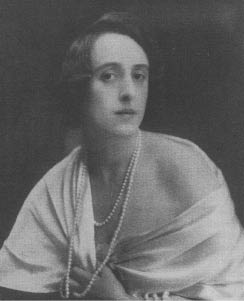

4. Bölüm
Orlando gerdanlığındaki onuncu incinin satışından eline geçen paranın bir kısmıyla kendisine o günün kadınlarının giydiği kıyafetlerden aldı, şimdi de mevki sahibi genç bir İngiliz kadını olarak Âşık Hanımefendi gemisinin güvertesinde oturuyordu. Tuhaf ama gerçekti, o ana kadar cinsiyeti üzerinde hiç düşünmemişti. Belki de o güne kadar giydiği Türk işi şalvarlar aklını karıştırmıştı; Çingene kadınlarının da, bir-iki önemli ayrıntı dışında Çingene erkeklerinden pek farkı yoktu. Her neyse, ancak bacaklarına dolanan eteklerini hissedince ve Kaptan, olanca kibarlığıyla, güvertede başının üstüne bir tente gerilmesini teklif edince Orlando ürktü, konumunun olumsuzluklarının ve ayrıcalıklarının farkına vardı. Ama bu ürkme beklenen türden değildi.
Ürkmesinin nedeni sadece ve sadece namusunu ve onu nasıl koruyacağını düşünmesi değildi. Normal koşullarda yalnız ve güzel bir genç kadın başka bir şey düşünmezdi; kadının yapısı tamamen o temel taşının üzerine oturtulmuştur; namus kadının mücevheridir, merkezidir, onu korumak için deli olur, elinden alınırsa ölür. Ama insan otuz yıl kadar erkek, üstelik büyükelçi de olmuşsa, bir kraliçeyi ve, denilenler doğruysa, daha aşağı tabakadan başka bir-iki hanımı da kollarına almışsa, Rosina Pepita ile evlenmişse filan, namus konusu belki de pek fazla ürkütmez onu. Orlando, öyle bir çırpıda özetleyemeyeceğimiz çok karmaşık bir nedenden dolayı ürkmüştü. Aslında onu her şeyi bir çırpıda anlayıveren parlak zekâlı biri olmakla suçlayan çıkmamıştı. Neden ürktüğünü anlayıp ona ahlaki bir gerekçe bulana kadar yolculuğun sonuna geldi. Biz de onu, kendi temposuyla izleyeceğiz.
“Tanrım,” diye düşündü, kendini toplayınca, tentenin altında enine boyuna gerinirken, “bu gerçekten de çok hoş, tembel bir yaşama biçimi. Ama,” diye düşündü, bacaklarını sağa sola sallarken, “insanın ayaklarına dolanan bu etekler çok can sıkıcı. Yine de kumaşları (çiçekli ipek) dünyanın en güzel şeyleri. Cildimi (bunu derken elini dizine koydu) hiç bu kadar güzel görmemiştim. Ama güverteden aşağı atlayıp bu kıyafetle yüzebilir miyim? Hayır! Bu yüzden bir denizcinin beni korumasına ihtiyacım olacak. Buna itirazım var mı? Var mı?” diye sordu, iddiasının pürüzsüz yumağında ilk düğümü görerek.
O düğümü çözemeden akşam yemeği zamanı geldi, düğümü çözen de, bizzat saygıdeğer denizci Kaptan Nicholas Benedict Bartolus oldu. Orlando’ya bir dilim salamura et verirken, “Yağlı kısımdan biraz alır mıydınız Madam?” diye sordu. “Size küçücük bir dilim keseyim, tırnağınız kadar küçük.” Bu sözleri duyunca Orlando’nun bedeni zevkle titredi. Kuşlar cıvıldadı; seller boşaldı. Yüzlerce yıl önce Saşa’yı gördüğü an duyduğu tanımsız zevkin verdiği duyguyu hatırlattı ona. O zamanlar kovalayandı, şimdiyse kaçan. Hangisi daha büyük bir vecit anıydı? Kadınınki mi, erkeğinki mi? İkisi aynı şey değil miydi? Yo, diye düşündü, en zevklisi (kaptana teşekkür etti ve almadı) bu geri çeviriş ve kaptanın kaşlarını çatmasını görmek. Eh, eğer adam istiyorsa kendisi azıcık, birazcık ürperirdi. En zevklisi de buydu, boyun eğmek ve adamın gülümsediğini görmek. “Çünkü,” diye düşündü, güvertedeki koltuğuna dönüp iddiasını sürdürürken, “önce karşı koyup sonra teslim olmaktan daha muhteşem bir şey yoktur; teslim olmaktan ve karşı koymaktan. İnsanın ruhunu böylesine coşturan başka bir şey yoktur. Bu yüzden,” diye devam etti, “bir denizci tarafından kurtarılma zevkini tatmak için güverteden aşağı atlamayacağımdan emin değilim.”
(Orlando’nun, kendisine bir oyun bahçesi verilen ya da eline bir oyuncak dolabı geçiren bir çocuk gibi olduğu akılda tutulmalı; onun iddiaları, hayatları boyunca bu tür şeylerin keyfini sürmüş olgun kadınlara uygun düşmeyebilirdi.)
“Ama bir denizci tarafından kurtarılma zevkini tatmak için kendini denize atan bir kadın hakkında Marie Rose’un kumanda kabinindeki biz gençler ne derdik?” diye sordu Orlando. “Onlara bir şey derdik. Ah, buldum...” ( Ama o sözcüğü kullanmamalıyız; son derece saygısızcaydı, bir hanımefendinin ağzına da yakışmıyordu.) “Tanrım! Tanrım!” diye bağırdı yine, düşünmesi bitince, “ne kadar korkunç olduğunu düşünsem de karşı cinsin görüşlerine saygı göstermeye mi başlayacağım? Eteklik giyeceksem, yüzemeyeceksem, bir denizci tarafından kurtarılacaksam, ulu Tanrım!” diye haykırdı, “zorunluyum buna!” Bunun üzerine karamsarlığa kapıldı. Doğuştan riyasızdı, kaçamaklı konuşmayı sevmezdi, bu yüzden yalan söylemekten sıkılıyordu. İşini görmenin dolambaçlı bir yolu gibi görüyordu yalanı. Yine de çiçekli ipeği düşününce –bir denizci tarafından kurtarılmanın zevkini– bunlar sadece dolambaçlı yollardan elde edilebilecekse, o zaman dolambaçlı yoldan gitmek gerek, dedi. Genç bir erkekken, kadınlar uysal olmalı, iffetli, güzel kokulu ve süslü püslü olmalı diye nasıl ısrarcı olduğunu hatırladı. “Şimdi bu arzuların bedelini kendimde ödemem gerekecek,” diye düşündü; “çünkü kadınlar (bu cinsteki kısa deneyimime bakarak söyleyebilirim) doğuştan uysal, iffetli, güzel kokulu ve süslü püslü değiller. Onlar olmadan hayatın zevklerinden hiçbirinin tadını çıkaramayacakları bu inceliklere ancak sıkı bir disiplinle kavuşabilirler. “Saça biçim vermek,” diye düşündü, “sadece bu iş sabahları bir saatimi alır, aynaya bakmak da bir saat sürer; balen takıp korseyi sıkıştırmak; yıkanıp pudralanmak; ipekleri çıkarıp dantelleri giymek, danteli çıkarıp ipekleri giymek; sürgit iffetli olmak...” Bu noktada ayağını sabırsızca sallayınca bacağının üç-beş santimi göründü. Direğin tepesindeki bir denizci o sırada aşağı bakınca öyle bir şaşırdı ki ayağını boşa bastı, düşmekten zor kurtuldu. “Eğer ayak bileğimi görmek, kuşkusuz geçindirmek zorunda olduğu çoluk çocuğu bulunan dürüst bir adam için ölüm demekse, ben bileklerimi ne olursa olsun açmamalıyım,” diye düşündü Orlando. Ama bacakları onun en güzel yerlerinden biriydi. “Bir denizci direğin tepesinden düşmesin diye bir kadının bütün güzelliği gizli tutulacaksa ne tuhaf bir iş bu,” diye düşündü. “Lanet olsun!” dedi, başka koşullarda olsa daha çocukken kendisine öğretilecek olan şeyin, yani kadınlığın kutsal sorumluluklarının farkına ilk kez varıyordu.

Orlando İngiltere’ye döndüğünde
“İngiltere toprağına ayak basınca,” diye düşündü, “bir daha ağzımdan böyle bir küfür çıkamayacak. Bir daha asla bir adamın kafasına vuramayacak, dişlerini dökerim diyemeyecek, kılıcımı çekip onu ikiye bölemeyecek ya da akranlarımın arasında oturamayacak, başıma taç takamayacak, geçit töreninde yürüyemeyecek, bir adamı ölüme mahkûm edemeyecek, ordunun başına geçemeyecek, Whitehall’dan aşağı atımı koşturamayacak, göğsümde yetmiş iki tane farklı nişan taşıyamayacağım. İngiltere toprağına ayak basar basmaz tek yapabileceğim, çay servisi yapmak ve beyefendilere beğendiniz mi diye sormak olacak. Şeker alır mısınız? Krema alır mısınız?” Ağzını büze büze bunları söylerken, bir zamanlar ait olmaktan gurur duyduğu karşı cinsi, yani erkek cinsini ne kadar aşağıladığını fark edip dehşete kapıldı. “Sırf bir kadının ayak bileklerini gördüler diye,” diye düşündü, “direğin tepesinden düşerler; kuklalar gibi giyinip kadınlar pohpohlasın diye sokakları arşınlarlar; onlarla alay ederler korkusuyla kadınlara eğitim vermekten kaçınırlar; en çelimsiz eksik eteğin bile esiri olurlar; yine de küçük dünyaları ben yarattım havalarında dolaşırlar – aman Tanrım!” diye düşündü, “bizi nasıl da budala yerine koyuyorlar, biz de ne kadar budalayız!” Bu sözlerinin pek anlaşılır olmaması, sanki iki cinse de ait değilmiş gibi ikisini de aynı ölçüde kınadığını gösterebilir; gerçekten de, o sırada ikisi arasında gidip gelir gibiydi; erkekti; kadındı; iki cinsin de sırlarını biliyor, zaaflarını paylaşıyordu. Çok akıl karıştırıcı ve baş döndürücü bir ruh halindeydi. Bilmemenin verdiği rahatlıktan eser yoktu onda. Fırtınada uçuşan bir tüydü. Cinslerin birini öbürüyle kıyaslayıp ikisini de en acınası kusurlarla dolu bulurken ve hangisine ait olduğuna karar veremezken, Türkiye’ye döneceğini ve yeniden bir Çingene olacağını haykırmak istemesinde şaşılacak bir şey yok – tam haykırıyordu ki demir büyük bir gürültüyle denize düştü, yelkenler hızla güverteye indirildi, Orlando (günlerdir o kadar derin düşüncelere dalmıştı ki hiçbir şey görmemişti) geminin İtalya kıyılarının açığında demirlediğini fark etti. Kaptan hemen birini gönderdi, kendisiyle birlikte büyük sandala binip kıyıya çıkma onurunu bahşetmesini istedi ondan.
Orlando ertesi sabah döndüğünde tentenin altındaki şezlonga uzandı ve eteğinin kıvrımlarını gayet edepli bir şekilde ayak bileklerinin etrafına sıkıştırdı.
“Kendileri her türlü silahla donanmışken bizi alfabeyi öğrenmekten bile yoksun bırakan,” diye düşündü, geçen gün yarım bıraktığı cümleyi tamamlayarak, “öbür cinsle karşılaştırıldığımızda cahil ve yoksul sayılsak da (bu başlangıç sözcüklerine bakınca, geceleyin onun dişi cinse meyletmesine yol açan bir şey olduğu apaçık belli, çünkü erkekten çok kadın gibi konuşuyordu, yine de halinden hoşnut görünüyordu), “öyle de olsa – onlar direğin tepesinden düşüyorlar.” Bunu derken ağzını iyice açarak esnedi ve uyuyakaldı. Uyandığında gemi tatlı bir esinti eşliğinde kıyının o kadar yakınından geçiyordu ki kayalıkların ucundaki kasabaları suya kaymaktan alıkoyan sanki sadece araya giren iri bir kaya ya da kadim bir zeytin ağacının büklümlü kökleriydi. Meyve yüklü binlerce ağaçtan gelen portakal kokuları güvertede oturan Orlando’ya kadar ulaşıyordu. Kuyruklarını kıvıran bir yunus sürüsü ara sıra göğe doğru sıçrıyordu. Orlando kollarını iki yana gerdi (kolların bacaklar kadar ölümcül etkisi olmadığını artık öğrenmişti), bir savaş atının sırtında Whitehall’dan aşağı hoplaya zıplaya gitmediği, hatta bir adamı ölüme mahkûm etmediği için Tanrı’ya şükretti. “Kadınlığın kara giysileri olan yoksulluk ve cehalete bürünmek,” diye düşündü, “daha iyi; dünyanın kurallarını ve disiplinini başkalarına bırakmalı; evliliğe dair hırslardan, kudret sevdasından ve bütün öteki erkekçe arzulardan kurtulmalı, eğer böyle yaparak insan ruhunun bildiği en yüce hazların,” dedi yüksek sesle, çok duygulandığında böyle yapardı, “yani tefekkürün, yalnızlığın, aşkın tadını alabildiğine çıkartabileceksek.”
“Şükürler olsun ki ben kadınım!” diye bağırdı, ait olduğu cinsten duyduğu gururla iyice kendinden geçmek üzereydi ki – ne kadında ne de erkekte bundan daha rahatsız edici bir şey yoktur– o tek kelimeye, yerinde tutmak için ne kadar çabalarsak çabalayalım, son cümlenin ucundan içeri giren kelimeye, Aşk’a gelince durdu. “Aşk” dedi Orlando. Bir anda –böyle acelecidir aşk–, insan şeklini aldı – böyle gururludur. Başka fikirler soyut kalmayı yeğlerken aşkı ete kemiğe bürünmekten –şal ve kombinezon, çorap ve yelek giymekten– başka bir şey tatmin etmez. Orlando’nun bütün sevgilileri kadınlardı, şimdi kendisi de kadındı ama insan doğası gereği geleneklere kolay kolay uyum sağlayamayacak kadar tembel olduğundan, hâlâ bir kadına âşıktı; onlarla hemcins olduğunu bilmesinin bir etkisi varsa da o da erkekken sahip olduğu duyguları hızlandırmaya ve derinleştirmeye yaramıştı. Çünkü eskiden karanlıkta olan binlerce ima ve gizem şimdi açığa çıkmıştı. Şimdi, iki cinsi birbirinden ayıran ve içinde sayısız pislik barındıran bilinmezlik ortadan kalkmıştı ve şairin hakikat ve güzellik hakkında söylediklerinde herhangi bir anlam varsa bu sevgi sahteliğini yitirdikçe güzelleşti. Nihayet, diye bağırdı Orlando, Saşa’yı olduğu gibi tanıyorum ve bu keşfin verdiği heyecanla ve şimdi gözlerinin önünde açılmış bütün hazinelerin peşinden gitme isteğiyle öyle kendinden geçti, öyle büyülendi ki, “İzin verin Madam” diyen bir erkek sesi duyunca kulağının dibinde bir bomba patlamış gibi oldu; adam onu tutup ayağa kaldırdı; orta parmağında üç direkli bir yelkenli dövmesi bulunan bir erkek eli ufku gösterdi.
“İngiltere kıyıları, Madam,” dedi kaptan ve göğü göstermiş olan elini kaldırıp selama durdu. Orlando bir kez daha irkildi, hem ilkinden de şiddetli.
“Ulu Tanrım!” diye bağırdı.
Bereket vatanını uzun bir aradan sonra görmüş olması hem irkilişini hem de haykırışını bağışlattı, yoksa içinde köpüren, birbiriyle çelişen coşkun duyguları Kaptan Bartolus’a açıklamakta zorluk çekebilirdi. Şimdi kaptanın kolunda tir tir titreyen kişinin bir zamanlar bir dük ve bir büyükelçi olduğunu ona nasıl anlatabilirdi? Kat kat ipeklerin arasında bir zambağa benzeyen kişinin kafaları kopardığını, lalelerin açtığı, Wapping’deki Old Stairs’de arıların vızıldadığı yaz gecelerinde korsan gemilerindeki define çuvallarının arasında ahlaksız kadınlarla yattığını nasıl açıklardı? Kaptan hiç titremeyen sağ eliyle İngiltere adalarının kayalıklarını işaret ettiğinde neden o kadar irkildiğini kendisine bile açıklayamazdı.
“Reddetmek ve teslim olmak,” diye mırıldandı, “ne kadar güzel; takip etmek ve fethetmek, ne kadar muhteşem; idrak etmek ve yargıya varmak, ne kadar ulvi.” Bu şekilde eşleşen kelimelerin hiçbiri ona yanlış görünmüyordu; bununla birlikte beyaz kayalıklar yakınlaştıkça Orlando kendini günahkâr hissetti; onuru lekelenmiş; iffetsizleşmiş gibiydi, bu konularda hiç kafa yormamış biri için tuhaftı bu. Kayalıklar gitgide yakınlaştı, sonunda onların yarı yerinde sarkan deniz rezenesi toplayıcıları çıplak gözle görünür oldu. Onları seyrederken Orlando içinde, bir anda eteklerini toplayıp ortadan kaybolacak alaycı bir hayalet gibi oraya buraya seğirten kayıp Saşa’yı hissetti, gerçekliğini şaşırtıcı bir şekilde az önce kanıtlamış olduğu anıların Saşa’sını – Saşa’nın yüzünü buruşturduğunu, suratını astığını, kayalıklara ve deniz rezenesi toplayanlara doğru çeşit çeşit terbiyesiz hareketler yaptığını hissetti; denizciler “Öyleyse hoşça kalın ve görüşmek üzere, İspanya’nın hanımları” diye şarkı söylemeye başladığında sözcükler Orlando’nun üzgün yüreğinde yankılandı, kıyıya yanaşmanın rahat, bolluk, önem ve mevki (kuşkusuz soylu bir prens bulacak ve onun eşi olarak Yorkshire’ın yarısına hükmedecekti) anlamına geldiğini bilse de eğer sonunda kendisini esaret, kandırmaca, aşkını yadsıma, elinin kolunun bağlanması, dudaklarının büzülmesi ve dilini tutması bekleyecekse gemiyle geriye döner ve yeniden Çingenelerin yanına doğru yelken açardı.
Aklından hızla geçen bu düşüncelerin arasında pürüzsüz beyaz mermerden kubbe gibi bir şey belirdi, gerçek de olsa hayal de olsa Orlando’nun hararetli hayalgücünü öyle etkiledi ki, Orlando o şeyin üzerine, nadir bulunan bir sebzeyi koruyan cam fanusun üzerine büyük bir memnuniyetle, titreşerek konan pırıl pırıl bir yusufçuk sürüsü gibi yerleşti. Hayalgücü oyun oynadı ona ve cam fanusun biçimi, o çok eski, en kalıcı anıyı hatırlattı – Twitchett’in oturma odasında oturmuş yazı yazan o geniş alınlı adamı, daha doğrusu bakıyordu adam, ama Orlando’ya değil, çünkü onun bütün albenisiyle –güzel bir oğlandı, bunu yadsıyamazdı– orada durduğunu görmemiş gibiydi – ne zaman o adamı düşünse düşüncesi o anının etrafına, tıpkı çalkantılı suların üzerine vuran ay gibi, gümüşsü sakinlikte bir tabaka yayardı. Eli göğsüne gitti (öbür eli hâlâ kaptanın elindeydi), şiirinin sayfaları orada saklıydı. Sanki bir muskaydı orada gizlediği. Cinsiyet konusu, kendisinin hangi cinsten olduğu, ne anlama geldiği, aklını karıştırmaz oldu; artık sadece şiirin ihtişamını düşünüyordu ve Marlowe’un, Shakespeare’in, Ben Jonson’un, Milton’un büyük şiirleri kulaklarında uğuldamaya, yankılanmaya başladılar, sanki Orlando’nun zihni bir katedralin kulesiydi de orada altın bir çan dili altın bir çana çarpıyordu. Gerçek şuydu ki, gözlerinin ilk başta hayal meyal keşfettiği ve bir şairin alnını çağrıştıran ve bu yüzden birbiriyle tutarsız fikirlerin aklına üşüşmesine yol açan mermer kubbe imgesi hayal ürünü değil, gerçekti; gemi Thames’de tatlı bir esintinin önünde kayarken, bütün çağrışımlarıyla birlikte imge yerini gerçeğe bıraktı ve oymalı süslemeleri olan beyaz sivri kulelerin arasında yükselen büyük bir katedralin kubbesinden başka bir şey olmadığı ortaya çıktı.
“St. Paul Katedrali” dedi yanında duran Kaptan Bartolus. “Londra Kulesi” diye devam etti. “Majesteleri merhum Üçüncü William tarafından eşi Kraliçe Mary’nin anısına yaptırılan Greenwich Hastanesi. Westminster Manastırı. Parlamento Binaları.” O konuşurken bu ünlü binaların hepsi birer birer görüş alanına girdi. Güzel bir Eylül sabahıydı. Sayısız küçük su taşıtı kıyıdan kıyıya gidiyordu. Ülkeye dönen bir seyyahın gözlerinin önüne bu kadar iç açıcı, ya da ilginç manzara serildiği pek olmamıştır. Orlando, şaşkınlık içinde pruvadan sarkmıştı. Gözleri öyle uzun zamandır vahşilere ve doğaya alışmıştı ki bu kentsel görkem onu büyülüyordu. Demek kendisinin yokluğunda Mr. Wren’in inşa ettiği St. Paul Katedrali’nin kubbesi buydu. Yakınlarda, bir sütunun içinden altın saçlar fışkırıyordu –yanıbaşındaki Kaptan Bartolus bunun Anıt olduğunu, Orlando’nun yokluğu sırasında şehirde veba salgını ve yangın çıktığını söyledi. Orlando, gözlerine dolan yaşları durdurmak için elinden geleni yaptı, sonra ağlamanın kadına yakıştığını hatırlayıp koyuverdi onları. Büyük karnaval, diye düşündü, burada yapılmıştı. Dalgaların kıyıya sertçe vurdukları şurada yazlık saray vardı. Saşa ile ilk kez şurada karşılaşmıştı. Şurada bir yerde (köpüren sulara baktı) manav kayığında kucağında elmalarıyla donmuş kadını görürdük. Bütün o görkem ve yozlaşma artık yoktu. Karanlık gece de, müthiş sağanak da, coşup taşan sel suları da yoktu. Dehşet içindeki zavallı insanları taşıyan sarı buzdağlarının döne döne, hızla geçtiği yerde şimdi gururlu, harika bir kuğu sürüsü kıvrıla kıvrıla yüzüyordu. Orlando’nun son gördüğünden beri Londra tamamıyla değişmişti. O zamanlar, diye hatırladı, şehir birbirine sokulmuş küçük siyah, sevimsiz evlerden oluşuyordu. Temple Bar’da asilerin başları kazıkların sivri uçlarında sırıtırdı. Taş döşeli yollar çöp ve gübre kokardı. Şimdi gemi Wapping’in önünden geçerken geniş ve düzenli caddeler çarptı gözüne. Besili çifte atların çektiği görkemli arabalar, kemerli pencereleri, kalın pencere camları, cilalı kapı tokmakları içinde yaşayanların varlığını ve mütevazı saygınlığını kanıtlayan evlerin kapılarında duruyordu. Çiçekli ipek giysiler giymiş hanımefendiler (kaptanın dürbününü gözlerine götürdü Orlando) yüksekçe yaya kaldırımlarında yürüyorlardı. İşlemeli ceketler giymiş şehirliler köşebaşlarında, sokak lambalarının dibinde burunlarına enfiye çekiyorlardı. Rüzgârda sallanan çeşitli resimli tabelalar gördü, üzerlerindeki şekillere bakarak, içerde satılan tütün, kumaş, ipek, altın, gümüş, eldiven, parfüm ve daha bin değişik malzeme hakkında fikir sahibi oldu. Gemi Londra Köprüsü’nün yanında demirleyeceği yere doğru giderken hava güzel olduğu için çok sayıda kentlinin önlerinde porselen tabaklar, yanlarında kilden pipolarla teraslarında rahatça oturdukları kahvehanelerin pencerelerine kısaca göz atabildi, aralarından biri bir gazeteden bir şeyler okuyor, ötekilerin kahkahaları ya da yorumları onun okumasını sık sık kesiyordu. Bunlar meyhane mi, bunlar nüktedan mı, bunlar şair mi? diye sordu Kaptan Bartolus’a, o da Orlando’ya nazikçe, şimdi bile – başını biraz sola çevirirse ve parmağının gösterdiği yöne bakarsa – öyle işte – Kakao Ağacı’nın önünden geçiyorlardı – işte oradaydı – kahve içen Mr. Addison’u görebileceğini söyledi; öbür iki beyefendi – işte Madam, lamba direğinin biraz sağında, biri kambur, ötekiyse sizin ve benim gibi – Mr. Dryden ile Mr. Pope.”18 “Zavallı köpekler,” dedi Kaptan, onların Katolik olduğunu ima ediyordu, “yine de yetenekli adamlar,” diye ekledi, kıyıya yanaşırken yapılacaklara göz kulak olmak için kıç tarafa doğru koşarken.
“Addison, Dryden, Poe,” diye yineledi Orlando bu sözcükler bir büyüymüş gibi. Bir an Bursa’nın sırtlarındaki yüksek dağları görür gibi oldu, bir an sonraysa kendi vatanının toprağına ayak bastı.
Ama Orlando en coşkulu heyecan çırpınışlarının bile yasaların demir çehresinin karşısında ne kadar az işe yaradığını öğrenecekti; bu çehrenin Londra Köprüsü’nün taşlarından daha sert ve bir topun ağzından daha haşin olduğunu da. Blackfriars’daki evine döner dönmez, Sulh Mahkemesi’nden peş peşe gelen polisler ve mahkemenin gönderdiği diğer asık suratlı haberciler kanalıyla, yokluğunda kendisine karşı üç büyük dava açılmış olduğunu öğrendi; ayrıca bazısı o davalardan doğan bazısı da onlara bağlı sayısız ufak tefek pürüzler de vardı. Ona karşı yapılan başlıca suçlamalar şunlardı: (1) Ölmüştü ve bu nedenle mal-mülk sahibi olamazdı; (2) Bir kadındı, ki bu da birincisiyle aynı anlama gelirdi; (3) Rosina Pepita adında bir dansçıyla evlenen bir İngiliz düküydü; o kadından üç oğlu olmuştu, bu çocuklar şimdi babalarının ölmüş olduğunu, bütün malvarlığının da kendilerine miras kaldığını iddia ediyorlardı. Bu türden ciddi suçlamalardan kurtulmak zaman ve para isterdi elbette. Davalar sürerken Orlando’nun bütün malı-mülkü yeddiemine devredildi ve kendisine verilmiş rütbeler askıya alındı. Böylece, ne olduğu epeyce belirsiz bir durumda, ölü mü diri mi, kadın mı erkek mi, dük mü önemsiz biri mi olduğuna karar verilemeden, posta arabasıyla kırsaldaki evine gönderildi, mahkemenin kararı beklenirken kimliği meçhul bir kadın ya da erkek olarak –mahkeme hangisini uygun görürse– orada oturmasına izin verildi.
Geldiğinde güzel bir Aralık akşamıydı, kar yağıyordu ve leylak rengi gölgeler, Bursa’daki dağın tepesinden gördüğüne benzer şekilde epeyce eğik düşüyorlardı. Büyük ev, evden çok bir kasabaya benziyordu, karın altında kahverengili mavili, pembeli morluydu, kendilerine ait hayatları varmış gibi duran bütün bacalarından bol bol duman çıkıyordu. Evi orada öyle sakin ve devasa, çayırların üzerine yerleşmiş gördüğünde elinde olmadan bir çığlık attı. Sarı araba parka girdiğinde ve ağaçların arasındaki araba yolunda hızla ilerlediğinde, kırmızı geyikler birini beklermiş gibi başlarını kaldırdılar ve kendi türlerinde doğal sayılacak ürkekliği göstereceklerine arabanın peşinden gittiler, araba evin önünde durduğunda onlar da avlunun şurasında burasında durdular. Bazıları boynuzlarını savurdu, bazıları da basamak indirilip Orlando göründüğünde toprağı eşeledi. Hatta birinin gerçekten de onun önünde karda diz çöktüğü söylenir. Orlando’nun elini kapının tokmağına atmasına fırsat kalmadan kapının iki kanadı da açıldı ve ellerindeki ışıkları ve meşaleleri yükseğe kaldırmış Mrs. Grimsditch ile Mr. Dupper ve Orlando’yu karşılamak üzere kapıya çıkan bir öbek hizmetkâr göründü. Ama bu derli toplu kafileyi önce tazı Canute’nin aceleciliği bozdu, sahibesinin üzerine öyle bir coşkuyla atıldı ki neredeyse onu yere yıkıyordu; sonra Mrs. Grimsditch’in heyecanı araya girdi, reverans yapacak gibi oldu, duygularına kapılıp soluk soluğa Lordum! Leydim! Lordum! Leydim! dedi, sonunda Orlando her iki yanağına da candan birer öpücük kondurarak onu yatıştırdı. Sonra Mr. Dupper bir parşömeni okumaya başladı, ama köpeklerin havlaması, avcıların borularını öttürmesi, o kargaşada avluya çıkmış olan tazıların kafalarını dikip aya karşı uluması onun devam etmesine engel oldu, kalabalık, hanımlarının etrafında toplanıp onun geri dönmesinden duydukları büyük sevinci her şekilde gösterdikten sonra evin içine dağıldı.
Karşılarındaki Orlando’nun, tanıdıkları Orlando olmadığından hiçbiri bir an bile kuşkulanmadı. İnsanların zihinlerinde bir kuşku olsaydı bile geyiklerin ve köpeklerin hareketleri o kuşkuları gidermeye yeterdi, çünkü o dilsiz yaratıkların insanın kimliği ve kişiliği konusunda bizlerden çok daha iyi hüküm verdikleri bilinir. Ayrıca, dedi Mrs. Grimsditch o gece Çin çayını içerken Mr. Dupper’e, eğer Lordum şimdi bir Leydi olduysa, hayatımda ondan daha güzel bir hanım görmedim, hem biri ötekinden aşağı kalmıyor ki, ikisini de aynı derecede beğeniyorum; bir elmanın iki yarısı gibiler; hem, dedi Mrs. Grimsditch, sesini alçaltarak, ben hep kuşkulanmıştım (burada başını gizemli bir tavırla salladı), hiç şaşırmadım (bunu derken bilmiş bir ifadeyle salladı başını), çok da rahatladım; yamanması gereken havlular, rahibin odasındaki püsküllerini güvelerin yediği perdeler varken evde bir hanım bulunmasının zamanı gelmişti.
“Ve peşinden de küçük beyler ve küçük hanımlar gelmeli,” diye ekledi Mr. Dupper, kutsal mesleğinden yararlanarak bunun gibi nazik konularda fikrini açıklayabiliyordu.
Böylece, emektarlar kendi odalarında dedikodu ederken Orlando eline bir gümüş şamdan aldı ve bir kez daha salonlarda, galerilerde, avlularda, yatak odalarında dolaştı; atalarının arasından şu Başkâhyanın, bu Başmabeyincinin kara suratının kendisine tepeden baktığını gördü; kâh şu heybetli koltuğa oturdu, kâh şuradaki sayvana uzandı; kımıldayan duvar halısını gözledi; at sırtındaki avcıları ve kaçan Daphne’yi seyretti; çocukken yaptığı gibi penceredeki leopar armasının arasından içeri vuran ayışığının yarattığı sarı ışık gölüne elini soktu; öbür yüzü kaba tahta olan galerinin cilalı tahtalarında kaydı; bu ipeğe, şu satene dokundu; yunus motiflerinin yüzdüğünü hayal etti; saçlarını Kral James’in gümüş fırçasıyla taradı; yüzünü Fatih William’ın yüzlerce yıl önce öğrettiği şekilde ve aynı güllerden yapılmış kurutulmuş çiçeklere gömdü; bahçeye baktı ve uykudaki irisleri hayal etti, uyuyan dalyaları; karda bembeyaz parlayan narin orman perilerini ve onların arkasındaki kapkara, bir ev kadar geniş, büyük porsuk ağacı çitlerini gördü; limonlukları ve devasa muşmulaları gördü; bütün bunları gördü ve şimdi böyle kabaca kâğıda geçirirsek, gördüğü her bir şey ve duyduğu her ses, onun yüreğini öyle bir şehvet ve zevk merhemiyle doldurdu ki, sonunda yorgun düştü, şapele girdi ve atalarının ayini dinledikleri eski kırmızı koltuğa çöktü. Orada bir puro yaktı (Doğu’da edindiği bir alışkanlıktı bu) ve dua kitabını açtı.
Kadife ciltli, küçük bir kitaptı bu, sırma iplikle dikilmişti, İskoçya Kraliçesi Mary darağacında elinde tutmuştu onu, inançlı gözler, kraliyet kanı olduğu söylenen bir damla kanın bıraktığı, kahverengiye çalan bir leke görebilirdi. Ama bütün bağlantılar içinde en anlaşılmazı Tanrıyla olan bağlantı ise, Orlando’da hangi dindar düşüncelerin uyandığını, hangi kötücül tutkuların yatıştığını söylemeye kim cesaret edebilir? Romancı, şair, tarihçi, hepsi duraklar elleri o kapının üzerinde; inanan da bizi aydınlatmaz, herkesten daha mı hazırdır ölmeye, ya da daha mı heveslidir mallarını paylaşmaya? Onun da ötekiler kadar hizmetçileri ve koşum atları yok mu? Ve bütün bunlara rağmen, malı-mülkü boş bir kibir, ölümü de arzulanır sayan bir inanca sahip. Kraliçe’nin dua kitabında, kan lekesinin yanı sıra bir saç buklesi ve kurabiye kırıntısı da vardı; Orlando bu hatıralara bir tutam tütün ekledi, ve böylece okurken ve sigarasını içerken, bütün bunların –saçın, kurabiyenin, kan lekesinin, tütünün– insani keşmekeşinden öyle etkilendi, öyle dalgınlaştı ki, bildiğimiz Tanrı’yla bir muhabbeti olmadığı söylenmesine rağmen o koşullara uygun saygın bir hava geldi üzerine. Ancak, sadece bir tek Tanrı olduğunu ve konuşmacının dininden başka bir din bulunmadığını varsaymak çok yaygın olsa da bundan daha kibirli bir şey de yoktur. Görünüşe göre Orlando’nun kendine özgü bir inancı vardı. Büyük bir dinsel şevkle şimdi günahlarını ve ruhuna sızmış kusurları düşünüyordu. Y harfi, diye düşündü, şairin cennetindeki yılandır. Ne yaparsa yapsın “Meşe Ağacı”nın ilk kıtalarında bu günahkâr sürüngenlerden fazlasıyla mevcuttu. Ama ona kalırsa “yor” son ekiyle karşılaştırıldığında Y hiçbir şeydi. Şimdiki zaman kipi şeytanın ta kendisidir, diye düşündü, ne de olsa şeytanlara inanılan yerdeyiz. Şairin ilk görevinin bu tür tahriklerden kaçınmak olduğuna karar verdi, çünkü kulak ruhun ön odasıydı ve şiir, şehvet ya da baruttan daha etkili olarak bozabilir ve tahrip edebilirdi saflığı. Öyleyse en yüce görev şairinkidir, diye devam etti. Başkalarının sözlerinin ulaşamadığı yere ulaşır onunkiler. Shakespeare’in saçma sapan bir şarkısının yoksullara ve kötülere, dünyanın bütün vaizlerinden ve hayırseverlerinden daha çok yararı dokunmuştur. Haberimizin vasıtasının daha az çarpıtılmasına yarayacaksa, kaç saat harcanırsa harcansın, ne kadar özveri gösterilirse gösterilsin fazla sayılmaz. Düşüncelerimizi kaplayan incecik bir zar olana kadar biçimlendirmeliyiz kelimelerimizi. Düşünceler kutsaldır filan. Böylece Orlando’nun kendi dininin sınırları içine geri döndüğü belli oldu, yokluğu sırasında zaman o dini güçlendirmişti ve Orlando inancında hızla bağnazlaşıyordu.
“Büyüyorum,” diye düşündü, sonunda mumunu eline alarak. “Hayallerimin bir kısmını kaybediyorum,” dedi, Kraliçe Mary’nin dua kitabını kapatırken, “belki de başkalarını ediniyorumdur,” ve atalarının kemiklerinin durduğu mezarların arasına indi.
Ama atalarının, Sir Miles’ın, Sir Gervase’in ve ötekilerin kemikleri bile, Rüstem el Sadi o gece Asya’nın dağlarında elini salladığından beri kutsallıklarının bir kısmını kaybetmişlerdi. Sadece üç ya da dört yüzyıl önce bu iskeletlerin, günümüzün herhangi bir türedisi gibi dünyada başarılı olmak üzere yola çıkan, istediklerini de herhangi bir türedi gibi evler ve işyerleri, rütbeler ve nişanlar edinerek sağlayan birer insan olması, ve belki şairlerin bir de çok zeki ve eğitimli kişilerinse kırsalın sakinliğini yeğlemiş ve bu tercihlerinin bedelini aşırı yoksullukla ödemiş olup şimdi Strand’de reklam broşürleri dağıtmaları ya da çayırlarda koyun gütmeleri her nasılsa Orlando’nun içini vicdan azabıyla doldurdu. Bodrum katındaki mezarlarda dururken, Mısır’daki piramitleri ve onların altında hangi kemiklerin bulunduğunu düşündü; Marmara Denizi’nin arkasında yükselen geniş, boş tepeler o an gözüne, örtüsüz tek yatağın, kapaksız tek gümüş çanağın bulunmadığı bu çok odalı evden daha yaşanası göründü.
“Büyüyorum,” diye düşündü, mumunu eline alırken. “Hayallerimi kaybediyorum, belki de yenilerini edinirim,” ve uzun koridordan geçerek yatak odasına gitti. Hoş olmayan, zahmetli bir işti bu. Ama şaşılacak kadar ilginç, diye düşündü, bacaklarını şöminedeki ateşe doğru uzatırken (çünkü etrafta bir denizci yoktu), büyük binalarla dolu bir bulvardan geçer gibi kendi geçmişinde ilerleyişini hatırladı.
Küçük bir çocukken seslerden nasıl da hoşlanırdı, dudaklarından karmakarışık dökülen hecelerin bütün şiirlerin en güzelleri olduğunu sanırdı. Sonra –belki de Saşa’nın ve hayalkırıklığının etkisiydi– bu çılgınlığın içine kara bir damla düşüp onun heyecanını uyuşukluğa dönüştürdü. İçinde yavaş yavaş, karmaşık ve çok bölmeli bir şey açılmıştı, araştırmak için şiir değil de düzyazı türünden bir meşale gerekiyordu; Norwich’li Doktor Browne’ı nasıl da tutkuyla incelediğini hatırladı, kitabı orada elinin altındaydı. Greene ile olan macerasından sonra burada tek başınayken, direnmeyi beceren bir ruh hali geliştirmişti, ya da geliştirmeye çalışmıştı, çünkü Tanrı bilir ya bu tür oluşumlar uzun sürer. “Yazacağım” demişti, “yazmaktan hoşlandığım şeyi”; ve böylece yirmi altı cilt doldurmuştu. Onca seyahatine, yaşadığı onca serüvene, derin düşüncelere, şu yana bu yana dönmelerine rağmen hâlâ sadece üretim sürecindeydi. Gelecekte kendisini, nelerin beklediğini Tanrı bilirdi. Değişim sürekliydi ve belki de asla sonu gelmeyecekti. Düşüncelerin yüksek burçları, kaya gibi sağlam görünmüş olan alışkanlıklar, başka bir zihnin dokunuşuyla gölgeler gibi devriliyor, geride çıplak bir gökyüzü ve içinde göz kırpan yeni yıldızlar bırakıyorlardı. Pencereye gitti, soğuğa rağmen elinde olmadan açtı onu. Gecenin nemli havasının içine eğildi. Ormanda uluyan bir tilkiyi, dalların arasından geçen bir sülünün pıtırtısını duydu. Çatıdan kayıp yere dökülen karın sesini duydu. “Yemin ederim ki,” dedi, “burası Türkiye’den bin kez daha iyi. Rüstem,” diye bağırdı, Çingene’yle tartışırmış gibi (aklında bir fikir taşımanın ve orada olmadığı için karşı çıkamayacak biriyle o fikri sürdürmenin verdiği yeni güçle yine ruhundaki gelişimi gösterdi), “yanılıyordun. Burası Türkiye’den daha iyi. Saç, kurabiye, tütün –ne tür ıvır zıvırdan bileşiğiz biz,” dedi (Kraliçe Mary’nin dua kitabını düşünerek). “Zihin ne biçim bir görüntü oyunu, birbirine benzemez şeylerin buluşma yeri! Bir an soyumuzdan, konumumuzdan pişmanlık duyuyor ve çileciliğin yüceliğini arzuluyoruz; bir an sonraysa eski bir bahçe yolunun kokusundan etkileniyor, ardıçkuşlarının şakımasını duyunca gözyaşı döküyoruz.” Açıklanma gerektiren, ancak ne demek istediklerine dair herhangi bir işaret bırakmadan mesajlarını zihne kazıyan şeylerin çokluğu karşısında her zamanki gibi şaşkına dönerek purosunu camdan dışarı fırlatıp yatağına gitti.
Ertesi sabah, bu düşüncelerin peşine takılıp kalemini kâğıdını çıkardı, “Meşe Ağacı” üzerinde yeniden çalışmaya başladı, çünkü böğürtlenlerle ve sayfa kenarlarıyla yetindikten sonra bolca mürekkebe ve kâğıda sahip olmak akıl almaz bir keyifti. Bu durumda, kâh umarsızlığa düşüp bir satırı çiziyor, kâh esrimenin doruklarında bir cümle ekliyordu ki kâğıdının üzerine bir gölge düştü. Orlando hemen elyazmasını gizledi.
Penceresi en ortadaki avluya baktığından, kimseyi görmek istemediğine dair talimat vermiş olduğundan, orada kimseyi tanımadığından ve kendisi de hukuki açıdan tanınmadığından o gölge önce şaşırttı onu, sonra kızdı, sonra da (başını kaldırıp gölgenin kime ait olduğunu gördüğünde) içi sevinçle doldu. Bildik birinin gölgesiydi bu, acayip bir gölgeydi, Romanya’daki Finster-Aarhorn ve Scand-op-Boom Arşidüşesi Harriet Griselda’dan başkası değildi gördüğü. Eskiden yaptığı gibi, sırtında eski siyah binici kıyafeti ve peleriniyle avludan uzun, esnek adımlarla geçiyordu. Saçının tek teli bile değişmemişti. Demek kendisini İngiltere’den gitmesine neden olan kadın buydu! O iğrenç akbabanın yuvası – ölümcül kuşun ta kendisiydi! Onun baştan çıkarmalarından (artık aşırı tatsızlaşmışlardı) uzak durmak için ta Türkiye’ye kadar gittiğini düşününce Orlando bir kahkaha attı. Kadının görünümü anlatılmaz derecede gülünçtü. Orlando’nun daha önce de düşündüğü gibi tıpkı dev bir tavşana benziyordu. O hayvan gibi dik dik bakan gözleri, cılız yanakları, kabarık saçları vardı. Gözetlenmediğini sanıp mısır tarlasında dimdik oturan bir tavşan gibi durup gözlerini Orlando’ya dikti, o da pencereden Arşidüşes’e baktı. Bir süre böyle bakıştıktan sonra Arşidüşes’i içeri davet etmekten başka çaresi kalmadı Orlando’nun, çok geçmeden de, Arşidüşes pelerinindeki karları silkelerken iki hanım birbirlerine iltifatlar etmeye başladılar.
“Lanet olsun şu kadınlara,” dedi Orlando, kendi kendine, bir bardak şarap almak üzere dolaba giderken, “insana bir an bile rahat vermiyorlar. Onlardan daha meraklı, daha sorgulayıcı, daha işgüzar kimse yoktur. İngiltere’yi bu panayır direğinden19 kaçmak için terk ettim, şimdi de–” gümüş tepsiyi Arşidüşes’e tutmak için arkasına döndüğünde bir de ne görsün – onun yerinde siyahlar giymiş uzun boylu bir beyefendi duruyordu. Şömine paravanının üzerine giysiler yığılmıştı. Bir erkekle baş başaydı.
Tamamıyla aklından çıkmış olan kendi cinsiyetinin ve karşısındakinin –ki onunki yeterince uzaktaydı şimdi ve aynı derecede rahatsız etmiyordu– böyle ansızın ayrımına varan Orlando bayılacak gibi oldu.
“Aman!” diye bağırdı, elini aşağı indirerek, “nasıl da korkuttunuz beni!”
“Nazlı yaratık,” diye bağırdı Arşidüşes, diz çöküp Orlando’nun dudaklarına tatlı bir içki değdirerek, “sizi kandırdığım için bağışlayın beni!”
Orlando şarabı yudumladı, Arşidüşes de eğilip onun elini öptü.
Kısacası, on dakika boyunca, büyük bir enerjiyle erkek ve kadın rolü oynadılar, sonra da doğal bir sohbete koyuldular. Arşidüşes (ama bundan böyle Arşidük demeliyiz ona) kendi hikâyesini anlattı, erkeğim ben, dedi, her zaman da öyle olmuştu; Orlando’nun bir portresini görüp umarsızca âşık olmuştu ona; amacına ulaşmak için kadın kılığına girmiş ve Fırıncının dükkânına yerleşmişti; Orlando Türkiye’ye kaçtığında çok üzülmüştü; ondaki değişimin haberini almış ve yardımını sunmak üzere koşup gelmişti (bunu söylerken lafı ağzında gevelemesi dayanılır gibi değildi). Arşidük Harry’nin gözünde Orlando her zaman kadınların en İyisi, İncisi, İstisnası olarak kalacaktı. Eğer araya tuhaf tuhaf ünlemler girmeseydi bu üç İ daha ikna edici olurdu. “Eğer aşk buysa,” dedi Orlando kendi kendine, şöminenin öbür tarafındaki Arşidük’e şimdi bir kadının bakış açısından bakarak, “çok tuhaf yanları var.”
Dizlerinin üzerine çöken Arşidük, ateşli bir evlenme teklifi yaptı. Şatosundaki bir kasada yirmi milyon düka altını olduğunu söyledi. İngiltere’deki bütün soylulardan daha genişti toprakları. Av alanları mükemmeldi, ona bir çuval dolusu kartavuğu ve keklik sözü verebilirdi ki, ne İngiltere’deki ne de İskoçya’daki bir otlak bununla rekabet edebilirdi. Evet, kendisinin yokluğunda sülünler hastalanmış, ceylanlar da yavrularını kaybetmişlerdi ama bu düzeltilebilirdi, birlikte Romanya’da yaşarlarsa Orlando’nun yardımıyla düzelirdi.
Bunları söylerken patlak gözlerinde iri gözyaşları belirdi, uzun, cılız yanaklarının pütürlü yüzeyinden aşağı aktı.
Erkeklerin de kadınlar gibi sık sık ve nedensiz yere ağladıklarını Orlando kendi erkeklik günlerinden biliyordu; ama erkekler yanlarında duygularını ifade ettiklerinde kadınların dehşete düşmeleri gerektiğini yavaş yavaş anlamaya başlıyordu ve kendisi de şimdi o durumdaydı.
Arşidük özür diledi. Orlando’nun yanından ayrılacağını söyleyebilecek kadar toparladı kendini, ama onun yanıtını almak üzere ertesi gün geri gelecekti.
Bunlar, bir Salı günü olmuştu. Arşidük Çarşamba günü geldi; Perşembe günü geldi, Cuma günü geldi, ve Cumartesi günü geldi. Her ziyaret bir aşk ilanıyla başladı, sürdü ya da bitti, doğru, ama arada sessizlik de bolca yer buldu kendine. Şöminenin iki yanında oturuyorlardı, bazen Arşidük maşaları deviriyor, Orlando da tekrar kaldırıyordu. Sonra Arşidük İsveç’te vurduğu iri geyiği anlatıyordu, Orlando da çok mu iriydi diye soruyordu, Arşidük de Norveç’te vurduğu Ren geyiği kadar büyük olmadığını söylüyordu; Orlando ona hiç kaplan vurup vurmadığını soruyordu, Arşidük de bir albatros vurduğunu söylüyordu, Orlando (esnemesini bastırmaya çalışarak) albatros fil kadar büyük mü diye soruyordu, Arşidük de – kuşkusuz çok mantıklı bir şey söylüyordu, ama Orlando onu duymuyordu, çünkü yazı masasına bakıyordu, camdan dışarıya ya da kapıya. Bunun üzerine Arşidük tam “Sana tapıyorum,” derken Orlando da “Bak, yağmur başladı,” diyordu, der demez ikisi de pek mahcup olup kıpkırmızı kesiliyorlardı, ikisi de ne söyleyeceğini bilemiyordu. Gerçekten de Orlando’nun aklına artık konuşacak hiçbir şey gelmiyordu, pek zorlanmadan büyük paralar kaybedilebilen, Sinek Yapıştı diye bir oyun olduğunu hatırlamasaydı, belki de Arşidükle evlenmek zorunda kalabilirdi; çünkü ondan nasıl kurtulacağını bilemiyordu. Ama bu oyun sayesinde, ki basit bir oyundu, sadece üç küp şeker ve yeterince sineğe gerek vardı, sohbetin yol açtığı mahcubiyetin üstesinden gelindi ve evlenme zorunluluğundan kaçınılabilindi. Çünkü şimdi, Arşidük, bir sineğin o şekere değil de buna konacağına dair Orlando’nun bir gümüş pounduna karşı beş yüz pound koyarak bahse tutuşuyordu. Böylece bütün bir sabahı (doğal olarak bu mevsimde uyuşuklaşan ve tavanda bir saat boyunca dönenen) sinekleri seyrederek geçirebileceklerdi, sonunda güzel bir kurt sineği konacağı yeri seçecek ve bahis kazanılacaktı. Bu oyunda yüzlerce pound aralarında el değiştirdi, doğuştan kumarbaz olan Arşidük bu oyunun at yarışı kadar iyi olduğuna yeminler ediyor, sonsuza kadar oynayabilirim diyordu. Ama çok geçmeden Orlando sıkılmaya başladı.
“Her sabahımı bir Arşidükle birlikte kurt sineklerini seyrederek geçireceksem, hayatının altın çağında güzel bir genç kadın olmamın ne yararı var,” diye sordu.
Şeker görmekten iğrenir oldu; sinekler başını döndürüyordu. Bu sıkıntıdan kurtulmanın bir yolu olmalı, diye düşündü, ama kendi cinsinin becerilerine hâlâ tam olarak hâkim değildi, artık bir erkeğe yumruk atıp yere deviremezdi, ya da palasıyla bedenini ikiye ayıramazdı, ama bunlardan daha iyi bir yöntem de gelmiyordu aklına. Eline bir kurt sineği aldı, yavaşça bastırıp öldürdü (zaten yarı ölüydü; yoksa Orlando o çaresiz yaratıklara acıdığı için böyle bir şey yapamazdı) ve sineği bir damla arapsakızıyla bir şeker topağına yapıştırdı. Arşidük’ün gözlerini tavana diktiği bir sırada, parasını yatırdığı şeker topağını bu yenisiyle değiştirdi, sonra da “Yapıştı, yapıştı!” diye bağırarak bahsi kendisinin kazandığını duyurdu. Spordan ve at yarışlarından iyi anlayan Arşidük’ün yapılan sahtekârlığın farkına varacağını ve bu oyunda hile yapmak suçların en iğrenci olduğundan ve sırf bu yüzden insanlar toplumdışı bırakılıp bir daha dönmemek üzere tropiklerdeki maymunların yanına gönderildiğinden, Orlando da Arşidük’ün bundan böyle kendisiyle ilişkisini kesecek kadar erkeksi davranacağını hesaplıyordu. Ama o cana yakın asilzadenin saflığını yanlış değerlendirmişti. Arşidük sineklerden pek anlamazdı. Onun gözünde ölü sinekle canlısının bir farkı yoktu. Orlando aynı numarayı yirmi kez yineledi, Arşidük de ona 17.250 pound ödedi (bizim paramızla 40.885 pound, 6 şilin ve 8 peni), sonunda Orlando sahtekârlığı o dereceye vardırdı ki Arşidük bile anladı neler döndüğünü. Gerçeği fark ettiğinde can sıkıcı bir sahne yaşandı. Arşidük ayağa fırladı. Kıpkırmızı olmuştu. Yanaklarından aşağı gözyaşları yuvarlandı. Orlando’nun kendisinden servet değerinde paralar kazanmış olmasının önemi yoktu –buyursun alsındı; asıl onu kandırmış olmasının önemi vardı– Orlando’nun böyle bir şey yapabileceğini düşünmek üzüyordu Arşidük’ü; ancak Sinek oyununda hile yapması asla kabul edilemezdi. Oyunda hile yapan bir kadını sevmesinin mümkün olmadığını söyledi. Bunu söylerken tamamıyla çöktü. Bereket, dedi, biraz kendini toparlayınca, tanık yoktu. Ne de olsa Orlando sadece bir kadın, dedi. Kısacası, şövalye yüreğiyle onu bağışlamaya hazırlanıyordu, sert sözleri için özür dilemek üzere eğildi, tam gururlu başını eğdiği sırada Orlando konuya son noktayı koydu ve Arşidük’ün gömleğinin altına küçük bir karakurbağası soktu.
Hakkını vermek gerek, ince bir kılıcı bin kat yeğlerdi. Karakurbağaları soğuk ve nemli şeyler, insan onları sabah boyunca bir tarafına gizleyemez. Ama kılıç yasaksa mecburen karakurbağasına başvurmak gerekir. Üstelik kurbağalarla kahkahalar birleşince bazen soğuk çeliğin yapamayacağını yaparlar. Orlando güldü. Arşidük kızardı. Orlando güldü. Arşidük küfür etti. Orlando güldü. Arşidük kapıyı çarpıp çıktı.
“Tanrıya şükür!” diye bağırdı Orlando gülmeye devam ederek. Aşağıdaki avluda delice bir hızla dönen araba tekerleklerinin sesini duydu. Yoldaki takırtılarını duydu. Ses gitgide hafifledi. Sonra da tamamıyla kesildi.
“Yalnızım,” dedi Orlando, yüksek sesle, çünkü onu duyacak kimse yoktu.
Gürültüden sonraki sessizliğin daha derin olması henüz bilimsel olarak doğrulanmamıştır. Ama sevişmenin hemen arkasından gelen yalnızlığın kendini çok daha fazla hissettirdiğine çoğu kadın yemin edebilir. Arşidükün arabasının tekerleklerinin sesi duyulmaz olduktan sonra Orlando bir Arşidük’ün (buna aldırmadı), bir servetin (buna aldırmadı), bir unvanın (buna aldırmadı), evlilik hayatının sağladığı güvenliğin ve olanakların (buna da aldırmadı) kendisinden gitgide uzaklaştığını hissetti, ama hayat da uzaklaşıyordu ve bir âşık da. “Hayat ve bir âşık” diye mırıldandı; yazı masasına gitti, kalemini mürekkebe batırıp şunu yazdı:
“Hayat ve bir âşık” – Vezne uymayan ve bir önceki dizeyle –koyun uyuzundan kaçınmak için koyunları yıkamanın en doğru yolu hakkında bir şeyler– uyum sağlamayan bir dize. Yazdığını okuyunca kızardı ve tekrarladı:
“Hayat ve bir âşık.” Sonra kalemini bırakıp yatak odasına gitti, aynanın karşısına geçti, boynundaki incileri düzeltti. Çiçekli pamukludan bir sabahlığın üzerinde inciler kendilerini gösteremediğinden güvercin grisi taftadan bir giysi giydi; onu çıkarıp şeftali çiçeği rengindekini seçti, sonra da bordo bir brokar. Belki biraz pudra iyi olurdu ve saçları da –şöylece– kaşlarının üzerine indirilirse, yakışırdı ona. Sonra ayaklarına sivri burunlu terliklerini geçirdi, parmağına zümrüt bir yüzük taktı. “Tamam” dedi, hazırlanınca ve aynanın iki yanındaki gümüş şamdanları yaktı. Orlando’nun karda yanarken gördüğü şeyi görmek için hangi kadın yanıp tutuşmazdı – çünkü aynanın her yerinde karlı çimenler vardı, Orlando da bir ateş gibiydi, alev almış bir çalılık, başının çevresindeki mum alevleri de gümüş yapraklardı; ya da ayna yeşil bir suydu, kendisi de bir denizkızı, boynunda incilerle, mağaradaki bir siren, şarkısını duyan kürekçiler kayıklarından aşağı sarkıyor ve düşüyorlardı, ona sarılmak için düşüyorlardı; Orlando o kadar karanlık, o kadar aydınlık, o kadar sert, o kadar yumuşaktı ki, öyle şaşırtıcı bir baştan çıkarıcılığı vardı ki lafı dolandırmadan, doğrudan “Lanet olsun, Madam, siz güzelliğin somutlaşmış halisiniz” diyecek birinin orada olmaması çok yazıktı, ki bu söz gerçeğin ta kendisiydi. Kendini beğenmiş biri olmayan Orlando bile bunu biliyordu, çünkü kendilerine ait değilmiş gibi görünen güzellikleri düşen bir damla ya da fışkıran bir fıskiye gibi ansızın aynada karşılarına çıkınca gayri ihtiyari gülümseyen kadınlar gibi gülümsedi – böyle gülümsedi, sonra bir an etrafa kulak verdi, sadece yaprakların hışırtısını, serçelerin cıvıltısını duydu, sonra da “Hayat, bir âşık” diyerek iç geçirdi, hızla topuklarının üzerinde döndü; boynundaki incileri çekip aldı, sırtındaki satenlerden sıyrıldı, sıradan bir soylunun giydiği düz, siyah ipekten paçalı kadın donuyla dimdik durdu ve çıngırağı çaldı. Uşağı geldiğinde ona hemen altı atlı arabasını hazırlatmasını emretti. Acele bir iş için Londra’ya çağrılmıştı. Arşidük’ün gidişinden bir saat sonra Orlando da arabayla yola çıktı.
O yoldayken biz de bu fırsattan yararlanalım, çünkü İngiltere’ye özgü, betimleme gerektirmeyen yalın bir manzaradan geçiyordu, biz de okurun dikkatini, söylerken yapamamış olsak da şimdi, anlatımın şurasında burasında, ağzımızdan çıkan bir-iki söze özellikle çekelim. Örneğin, biri geldiğinde Orlando’nun elyazmalarını sakladığı dikkatinizi çekmiş olabilir. Sonra, aynaya uzun uzun, dikkatle baktığını da fark etmişsinizdir; ve şimdi, Londra’ya giderken, atların hızlı gidişinden rahatsız olunca ürktüğü, çığlık atmamaya çalıştığı görülebilirdi. Yazdıkları konusundaki alçakgönüllülüğü, kendi kişiliği konusundaki kibri, güvenliği konusunda duyduğu korkular, bütün bunlar az evvel okuduğunuz erkek Orlando ile kadın Orlando arasında hiçbir fark olmadığı sözünün doğru olmaktan çıktığına işaret eder gibi. Tıpkı kadınlar gibi, zekâsı konusunda daha alçakgönüllü ve yine kadınlar gibi bedeni konusunda biraz daha kibirli olmaktaydı. Bazı duyarlılıkları iyice yerleşiyor, bazıları da silinip gidiyordu. Giysilerinin değişmesinin bunda büyük payı olduğunu söyleyecek düşünürler çıkabilir. Önemsiz ayrıntılar gibi görünseler de, giysilerin bizi sıcak tutmak dışında daha önemli görevleri olduğu söylenir. Bizim dünya görüşümüzü de dünyanın bize bakışını da değiştirirler. Örneğin, Kaptan Bartolus Orlando’nun etekliğini gördüğünde hemen ona bir tente açtırttı, bir dilim et daha alması için ısrar etti, kendisiyle birlikte şalupaya binip kıyıya çıkmaya davet etti. Eğer etekleri, uçuşmak yerine pantolon gibi bacaklarına yapışsaydı bu iltifatlar kesinlikle yapılmazdı. Ve bize iltifat edilirse, bize yakışan karşılık vermektir. Orlando diz kırıp selam verdi; uysal davrandı; adamcağızın gönlünü aldı, eğer karşısında kaptanın ütülü pantolonu yerine bir kadının etekleri ve şeritli ceketi yerine bir kadının saten korsesi olsaydı böyle bir şey yapmazdı tabii. Biz giysilerimizi değil, onlar bizi taşır sözünü destekleyecek çok şey var, anlayacağınız; kolumuzun ya da göğsümüzün şeklini almalarını sağlayabiliriz, ama onlar kalplerimizi, beyinlerimizi, dillerimizi istedikleri gibi biçimlendirirler. Böylece, uzunca bir süre eteklik giydikten sonra Orlando’da bir değişiklik gözlendi, okur yukarıdaki 125. sayfaya bakarsa bunu yüzünde bile görebilir. Orlando’nun erkek halindeki portresini kadın halindeki portresiyle karşılaştırırsak, ikisi de kuşkusuz aynı kişiye ait olsa da, bazı farklılıklar görürüz. Erkeğin eli, kılıcını kavramak üzere hazırdır, kadınsa elini saten kumaşın omuzundan kaymasını önlemek için kullanacaktır. Erkek dünyaya, sanki kendi kullanımı için ve kendi zevkine uygun biçimlenmiş gibi gözlerini kaçırmadan bakar. Kadınsa yan yan bakar, bakışları anlaşılmazdır, hatta kuşku doludur. İkisinin üzerinde aynı giysiler olsaydı, bakış açıları da aynı olabilirdi.
Bu, bazı düşünürlerin ve bilge kişilerin görüşü, ama genelde biz başka bir görüşe yöneliyoruz. Cinsler arasındaki fark, bereket çok derindir. Giysiler, yüzeyin çok altında saklı bir şeyin simgelerinden ibarettir. Kadın giysileri giyip dişi cinsiyeti seçmesi Orlando’nun içindeki bir değişiklikten kaynaklanıyordu. Ve bunu yaparken de çoğu kişinin başına gelen ama bu kadar açık dile getirilmeyen bir şeyi, belki herkesten daha fazla –dürüstlük onun doğasında vardı– açıklıyordu. Çünkü bu noktada karşımıza yine bir ikilem çıkıyor. Cinsler farklı olsalar da birbirine geçişlidirler. Her insan ruhunda bir cinsten öbürüne gidip gelir ve çoğunlukla sadece giysiler kadına ya da erkeğe benzetir kişiyi, oysa yüzeyin altındaki cinsiyet üstündekinin tam tersidir. Herkes bu şekilde ortaya çıkan zorluklarla karşılaşmış, akıl karışıklıkları yaşamıştır; ama biz burada genel meseleyi bırakalım, bizzat Orlando’nun durumundaki tuhaf etkisini kayda geçelim sadece.
Çünkü onun davranışlarında sık sık beklenmedik değişimlere yol açan, içindeki kadının ve erkeğin böyle birbirine karışması, önce birinin sonra diğerinin baskın olmasıydı. Meraklı hemcinsleri, örneğin Orlando’nun kadın olup olmadığını tartışabilirler, nasıl olup da en fazla on dakikada giyinebildiğini sorgulayabilirlerdi. Ve giysileri gelişigüzel seçilmiş değil miydi, hatta bazen çok kılıksız görünmüyor muydu? Kimileri de bir erkek gibi usul bilmediğini ya da güç peşinde koşmadığını söyleyebilirlerdi. Çok yufka yürekliydi Orlando. Bir eşeğin dayak yemesine ya da bir kedinin boğulmasına dayanamazdı. Yine de onun ev işlerinden nefret ettiği görülüyordu, yazın şafakta kalkıp daha güneş doğmadan çayırlara atıyordu kendini. Ekinler hakkında bütün çiftçilerden daha bilgiliydi. En usta içkicilerle yarışabiliyor, tehlikeli oyunları seviyordu. İyi at biniyor, altı atı dörtnala Londra Köprüsü’nden geçirebiliyordu. Bir erkek gibi gözüpek ve çalışkan olsa da tehlikede olan bir başka erkeği gördüğünde en kadınsı yürek çarpıntılarına tutuluyordu. Birazcık kışkırtılsa hemen gözyaşlarına boğuluyordu. Coğrafya konusunda cahildi, matematiğe tahammülü yoktu, erkeklerde değil de kadınlarda daha sıkça rastlanan bazı saçma fikirleri vardı, örneğin güneye gitmenin yokuş aşağı gitmek olduğunu düşünüyordu. Orlando’nun çoğunlukla erkek mi kadın mı olduğunu söylemek çok zor, şimdi bunun kararını veremeyiz. Çünkü arabası şu anda parke taşlarının üzerinde tıkır tıkır ilerliyor. Şehirdeki evine vardı. Arabanın basamakları indirildi, demir kapılar açıldı. Babasının Blackfriars’daki evine giriyordu, şehrin o tarafının modası hızla geçmekte olsa da orası hâlâ zevkli, ferah bir konuttu, bahçeleri nehre kadar iniyordu, gezintiler yapılabilecek, fındık ağaçlarından oluşan güzel bir de korusu vardı.
Orlando eve yerleşti ve aradığı şeyi –demek istiyoruz ki, hayatı ve bir âşığı– bulmak üzere hemen çevresine bakınmaya başladı. İlki konusunda kuşkular olabilir; ikincisini ise gelişinden iki gün sonra kolayca buldu. Şehre geldiğinde günlerden salıydı. Perşembe günü Mall’da yürüyüşe çıktı, o dönemde seçkin kişiler böyle yaparlardı. Bulvarda bir-iki kez turlamıştı ki, üst tabakadan olanları seyretmek üzere oraya gelmiş bir avuç ayaktakımının dikkatini çekti. Onların yanından geçerken kucağında bir çocuk taşıyan basit bir kadın öne çıktı, tanırmış gibi Orlando’nun yüzüne baktı ve “Yemin ederim ki Leydi Orlando bu!” diye haykırdı. Ötekiler de hemen oraya toplandılar, Orlando bir anda kendini kalabalığın ortasında buldu, halktan insanlar, tüccar karıları gözlerini dikmiş ona bakıyor, herkes ünlü davanın kahramanını görmek istiyordu. Onun davası sıradan insanların çok ilgisini çekiyordu. Kalabalığın arasında gerçekten sıkışıp kalacaktı –hanımefendilerin halka açık yerlerde tek başına dolaşmamaları gerektiğini unutmuştu–, o sırada uzun boylu bir beyefendi hemen öne çıktı ve kolunu uzatıp onu korumasına aldı. Arşidük’tü bu. Onu görünce Orlando hem üzüldü hem de eğlendi. Bu yüce gönüllü soylu kendisini bağışlamakla kalmamış, onun karakurbağası meselesindeki düşüncesizliğine darılmadığını göstermek amacıyla o hayvan şeklinde yaptırdığı bir mücevheri, Orlando’ya arabasına kadar eşlik ederken, evlilik teklifini yineleyerek eline tutuşturmuştu.
Kalabalık, Dük, mücevher filan derken akla gelebilecek en berbat ruh hali içinde döndü eve. Boğulur gibi olmadan, zümrütler içine oturtulmuş bir karakurbağası hediye edilmeden ve bir Arşidük’ten evlenme teklifi almadan insan gezintiye çıkamayacak mıydı? Ertesi gün kahvaltı masasında ülkedeki en önemli hanımefendilerden gelmiş yarım düzine pusula bulunca olaya daha ılımlı yaklaştı – Leydi Suffolk, Leydi Salisbury, Leydi Chesterfield, Leydi Tavistock ve diğerleri son derece nazik bir dille aileleri arasındaki eski bağları hatırlatıyor ve onunla tanışmak onuruna erişmek istediklerini belirtiyorlardı. Ertesi gün, ki cumartesiydi, bu önemli hanımefendilerin çoğu bizzat nezaket ziyaretinde bulundular. Salı günü, öğle saatlerinde, onların uşakları çeşitli resepsiyonlar, akşam yemekleri ve yakında yapılacak toplantılar için davetiyeler getirdiler; böylece Orlando hiç vakit yitirmeden, ortalığı biraz ayağa kaldırarak, Londra sosyetesinin sularına açıldı.
O zamanın, aslında herhangi bir zamanın Londra sosyetesinin gerçekçi bir tanımını yapmak biyografi yazarının da tarihçinin de üstesinden gelebileceği bir iş değildir. Sadece gerçeğe pek ihtiyaç duymayan ve saygı da göstermeyen kişilerin –yani şairler ve romancıların– bunu yapabileceğine güvenilir, çünkü bu örnek, gerçeğin mevcut olmadığı durumlardan biridir. Hiçbir şey mevcut değildir. Hepsi bir miyasmadır, bir imgedir. Ne demek istediğimizi şöyle açıklayalım – Orlando bu kabul törenlerinin birinden eve sabahın üçü ya da dördünde yanakları alev alev yanarak, gözleri ışıldayarak dönerdi. Bağcıklarından birini çözer, odada defalarca bir aşağı bir yukarı yürür, başka bir bağcığı çözer, durur, yeniden odada dolaşırdı. Çoğu kez yatağına gitmeye kendini ikna edebildiğinde güneş Southwark’ın bacalarının üzerinde parlamış olurdu, yatağında yatar, bir saat kadar oradan oraya döner, kahkahalar atar, içini çeker, sonunda uyuyakalırdı. Peki, neydi bu huzursuzluğun nedeni? Sosyete. Mantıklı bir hanımefendiyi böyle heyecanlandırmak için sosyete ne söylemiş ya da yapmış olabilirdi? Basitçe ifade edersek, hiçbir şey. Ertesi gün Orlando belleğini ne kadar zorlarsa zorlasın, herhangi bir şeyi şekillendirmesine yarayabilecek tek bir kelime bile hatırlayamazdı. Lord O. centilmendi. Lord A. nazikti. C. Markisi çekiciydi. Mr. M. eğlenceliydi. Ama onların centilmenliğinin, nezaketinin, çekiciliğinin ya da zekâsının neye dayandığını hatırlamaya çalışınca belleğinin işe yaramadığını düşündü, çünkü tek bir şey bile gelmedi aklına. Hep aynı şey oluyordu. Ertesi güne hiçbir şey kalmasa da o ânın verdiği heyecan müthişti. Bu yüzden sosyetenin, becerikli kâhyaların Noel zamanı sıcak sıcak servis ettikleri, lezzeti on-on beş malzemenin doğru oranda birleştirilip karıştırılmasına bağlı olan şu demlenmiş içkilerden biri sayıldığına hükmederiz. Malzemelerden birini çıkarın, içkiniz yavanlaşır. Lord O.’yu, Lord A.’yı, Lord C.’yi ya da Mr. M.’yi çıkarın, tek tek hiçbiri işe yaramaz. Hepsini bir araya getirip karıştırın, en baş döndürücü tatlardan birini, kokuların en baştan çıkarıcısını sunarlar. Yine de bu baş döndürücülüğü, bu baştan çıkarıcılığı çözümleyemeyiz. Demek ki sosyete aynı anda hem her şeydir hem de hiçbir şeydir. Sosyete hem dünyadaki en güçlü karışımdır hem de bir varlığı yoktur. Sadece şairler ve romancılar gibi canavarlar baş edebilirler onunla; çalışmalarını böyle “bir şey-hiçbir şey”lerle tıka basa doldururlar; biz de bu işi onlara gönül rahatlığıyla bırakırız.
Bizden öncekilerin örneğini izleyerek Kraliçe Anne20 döneminde sosyetenin benzersiz bir görkeme sahip olduğunu söylemekle yetineceğiz. Sosyeteye girmek, iyi aileden gelen herkesin amacıydı. Müthiş bir zarafet vardı. Babalar oğullarını, anneler kızlarını eğitiyorlardı. Her iki cins için de, görgü kurallarını, eğilip selam vermeyi, kılıç ya da yelpaze kullanmayı, diş bakımını, bacakları kullanmayı, dizlerin esnekliğini, bir salona en uygun şekilde girip çıkmayı ve bizzat sosyeteye girmiş herkesin aklına hemen gelebilecek daha binlerce şeyi içermeyen eğitim eksik sayılıyordu. Küçük bir çocukken bir gülsuyu kâsesini sunuş tarzı sayesinde Kraliçe Elizabeth’in takdirini kazanmış olan Orlando’nun sınavı geçecek kadar işini bildiğini varsayabiliriz. Bununla birlikte onun, bazen sakarlık derecesinde dalgın olduğu da bir gerçek; tafta giysileri düşünecekken şiir düşünmeye meylediyordu; adımları bir kadın için fazla geniş sayılabilirdi belki, sert el kol hareketleri de zaman zaman elindeki çay dolu fincanı tehlikeye sokabiliyordu.
Ya bu küçük beceriksizlik onun ortaya çıkışındaki görkemi dengelediğinden ya da bütün dişi cinsin damarlarında akan o kara mizahtan, yani insanı anlamsız ama nedense gülünç görme niteliğinden onun payına bir damla fazla düştüğünden olsa gerek, sosyete dünyasına ancak yirmi kez girip çıkmıştı ki, yanında köpeği Pippin’den başka kendisini duyacak biri olsaydı, kendi kendine “Neyim var benim Tanrı aşkına?” diye sorduğunu duyabilirdi. Bu dediğimiz 16 Haziran 1712, Salı günü oldu; Arlingtonların evindeki büyük bir balodan eve yeni dönmüştü; şafak sökmek üzereydi, o da çoraplarını çıkarıyordu. “Yaşadığım sürece bir daha kimseyi görmesem umurumda değil,” diye bağırdı Orlando, gözyaşları içinde. Bolca âşığı olmuştu, ama ne de olsa önemli sayılan hayat ondan kaçmıştı. “Bu mu” diye sordu – ama yanıt verecek kimse yoktu, “bu mu” diyerek cümlesini bitirdi yine de, “hayat denilen şey?” Ona sempati duyduğunu göstermek isteyen spanyel köpeği patisini kaldırdı. Dilini uzatıp Orlando’yu yaladı. Orlando spanyeli okşadı, uzanıp öptü onu. Kısacası, ikisinin arasında bir köpekle sahibesi arasında olabilecek içtenlikli bir sempati vardı, yine de hayvanların konuşamamasının, ilişkilerin gelişmesine büyük engel oluşturduğu yadsınamazdı. Kuyruklarını sallarlar, gövdelerinin ön kısmını yere eğip arka tarafını havaya dikerler; yerde yuvarlanırlar, sıçrarlar, pençe atarlar, ulurlar, havlarlar, salyalarını akıtırlar, kendilerine özgü pek çok usulleri ve oyunları vardır, ama bütün bunlar boşunadır, çünkü konuşamazlar. Arlingtonların evindeki önemli kişilerle benim aramdaki anlaşmazlık da bu, diye düşündü, köpeği usulca yere bırakırken. Onlar da kuyruklarını sallıyorlar, eğiliyorlar, yuvarlanıyorlar, sıçrıyorlar, pençe atıyorlar ve salyaları akıyor, ama konuşamıyorlar. “Dünyaya açıldığım onca ay boyunca,” dedi Orlando, çoraplarından birini odanın öbür tarafına fırlatırken, “Pippin’in de söyleyebileceklerinden fazlasını duymadım. Üşüyorum. Mutluyum. Karnım aç. Bir fare yakaladım. Bir kemik gömdüm. Lütfen burnumu öp.” Bunlar yeterli değildi.
Orlando’nun bu kadar kısa bir sürede esrimeden tiksinmeye nasıl geçtiğini, adına sosyete dediğimiz bu gizemli oluşumun aslında bütünüyle iyi ya da bütünüyle kötü olmadığını, içinde uçarı ama güçlü bir ruh barındırdığını ve bu ruhun, Orlando gibi zevkli olduğunu düşündüğünüzde başınızı döndürdüğünü ya da itici bulduğunuzda başınızı ağrıttığını varsayarak açıklamaya çalışacağız. İzin verirseniz, her iki halde de konuşma yetisinin bununla çok ilişkili olduğu konusunda kuşkularım olduğunu söylemeliyim. Çoğunlukla susarak geçirilen bir saat insanı mest eder; parlak bir zekâ inanılmaz derecede bıktırabilir. Ama biz bu işi şairlere bırakalım ve hikâyemize devam edelim.
Orlando ilkinin peşinden ikinci çorabını da fırlattı ve oldukça neşesiz bir halde, sosyeteden sonsuza dek uzak duracağına yemin ederek yatağına gitti. Ama kararlarında acele ettiği ortaya çıktı. Çünkü hemen ertesi sabah masanın üzerinde her zamanki davetiyelerin arasında önemli bir hanımefendiden, R. Kontesi’nden gelen bir davetiye buldu. Bir gece önce bir daha asla sosyeteye girmemeye karar vermiş olan Orlando’nun davranışını –R.lerin evine hemen bir ulak yollayarak büyük bir zevkle hanımefendinin davetini kabul ettiğini bildirdi–, Âşık Hanımefendi adlı gemiyle Thames Nehri’nde giderlerken güvertede Kaptan Nicholas Benedict Bartolus’un kulağına fısıldadığı üç tatlı sözcüğün etkisinden hâlâ kurtulamamasıyla açıklayabiliriz. Addison, Dryden, Pope, demişti Kaptan, Cocoa Tree’yi21 işaret ederek ve Addison, Dryden, Pope isimleri o günden beri Orlando’nun kafasının içinde büyülü kelimeler gibi çınlamıştı. Böylesi bir çılgınlığı akıl alır mı? Ama durum böyleydi. Nick Greene’le yaşadıklarından hiçbir şey öğrenmemişti Orlando. Böyle isimler onu hâlâ müthiş büyülüyordu. Belki de inanmalıyız buna, daha önce söylediğimiz gibi Orlando’nun bilinen tanrılara inancı olmadığından inancını büyük adamlara yöneltiyordu – ama fark gözeterek. Amiraller, askerler, devlet adamları onu hiç etkilemiyordu. Oysa büyük bir yazarı düşündüğü anda ona olan inancı öyle bir dereceye ulaşıyordu ki neredeyse o kişinin görünmez olduğuna inanıyordu. İçgüdüsü sağlamdı. İnsan belki de ancak göremediği bir şeye tümüyle inanabilir. Geminin güvertesinden bu büyük adamları ancak şöyle bir görebilmişti ve o da bir hayal gibi. Fincanın porselen, gazetenin de kâğıttan olduğundan kuşku duyardı. Bir gün Lord O. ona, bir gece önce Dryden ile yemek yedim dediğinde hiç inanmamıştı. Leydi R.’nin kabul salonu, dâhilerin görüşme salonuna geçiş odası olmakla ünlüydü; orada erkekler ve kadınlar buluşup buhurdanlıklarını sallar, duvardaki bir oyukta duran dâhinin büstünün karşısında ilahiler söylerlerdi. Bazen bizzat Tanrı lütfedip bir an görünürdü. Yalvaranlar arasından ancak zeki olanlar girebilirdi içeri ve içerde akıllıca olmayan tek söz edilmezdi (böyle anlatılıyordu).
Böylece Orlando salona büyük bir korkuyla girdi. Şömine-nin başında yarım daire şeklinde toplanmış bir grup gördü. Başında siyah dantel bir örtüyle esmer tenli, yaşlıca Leydi R. geniş bir koltukta, tam ortalarında oturuyordu. Biraz sağır olduğundan, her iki yanındaki konuşmaları ancak bu durumda takip edebiliyordu. İki yanında son derece seçkin kadınlar ve erkekler yer almıştı. Her erkeğin önceden bir başbakan olduğu söyleniyor, her kadının da eskiden bir kralın metresi olduğu fısıldanıyordu. Ancak şu kesindi ki, hepsi de zeki ve ünlü kişilerdi. Orlando sessizce derin bir reverans yaptı ve yerine oturdu... Üç saat sonra dizlerini kırarak selam verdi ve oradan ayrıldı.
Ama, diye sorabilir okur, biraz da öfkeyle, arada ne oldu. Üç saat içinde böyle bir topluluk dünyanın en zekice, en derinlikli, en ilginç şeylerini konuşmuş olmalı. Böyle de görünebilirdi gerçekten. Ama anlaşılan hiçbir şey konuşmamışlar. Dünyanın en parlak sosyeteleriyle paylaştıkları ilginç bir özellik bu. Yaşlı Madame du Deffand ve arkadaşları elli yıl durmaksızın konuştular. Bütün bu konuşmalardan geriye ne kaldı? Olsa olsa üç tane zekice laf. O zaman ya hiçbir şey konuşulmadı, ya da zekice bir laf edilmedi, ya da üç-beş zekice lafın küçük bir parçası on sekiz bin iki yüz elli geceye bölündü deme hakkımız var, ki bu gecelerden hiçbirine bu zekice laflardan yeterli miktarda düşemez.
Öyle görünüyor ki gerçek, bu grupların hepsinin üzerinde bir büyü olduğudur – böyle bir kelimeyi böyle bir bağlamda söylemeyi göze alırsak. Ev sahibesi bizim modern Sibil’imiz22. O, konuklarını efsunlayan bir cadı. Onlar bu evde mutlu olduklarını düşünüyorlar; şuradakinde zeki olduklarını; üçüncüsünde derinlikli olduklarını. Hepsi de yanılsama bunların (yanılsamalara karşı değiliz, çünkü onlar her şeyden daha değerli, daha gereklidir, bir yanılsama yaratabilen kadının dünyaya çok büyük yardımı dokunur), ancak yanılsamaların, gerçekle çelişince çöktükleri gibi kötü bir şöhretleri olduğuna göre, yanılsamaların hüküm sürdüğü yerde hiçbir gerçek mutluluk, hiçbir gerçek zekâ, hiçbir gerçek derinlik mevcut olamaz. Bu da Madam du Deffand’ın elli yıl boyunca neden üç zekice laftan fazlasını söylemediğini açıklar. Daha fazlasını söyleseydi çevresindekiler mahvolurdu. Dudaklarından dökülen zekice sözler o anki sohbeti, tıpkı toptan çıkan bir güllenin menekşeleri ve papatyaları ezmesi gibi ezer geçerdi. Ünlü “Saint Denis” esprisini patlattığında otlar sararırdı. Arkasından hayalkırıklığı ve perişanlık gelirdi. Tek bir söz edilmezdi. Arkadaşları hep bir ağızdan, “Tanrı aşkına sakın bir daha böyle bir şey yapmayın Madame!” diye bağırırlardı. O da itiraz etmezdi. Neredeyse tam on yedi yıl dişe dokunur bir şey söylememişti ve her şey yolunda gitmişti. Yanılsamanın güzel örtüsü onun çevresini tamamen kaplamıştı, tıpkı Leydi R.’nin çevresinde olduğu gibi. Konuklar mutlu olduklarını, zeki olduklarını, derinlikli olduklarını sandılar ve onlar böyle sanırken başkaları aynı şeylere daha da çok inandılar; böylece Leydi R.’nin toplantılarından daha keyifli bir şey olmadığı lafı yayıldı; o toplantılara kabul edilenlere herkes imrendi; kabul edilenler de kendilerine imrendiler, çünkü başkaları onlara imreniyordu; böylece bu iş bitmek bilmedi – şimdi anlatacaklarımız dışında.
Orlando’nun oraya üçüncü gidişinde bir olay oldu. Hâlâ dünyanın en zekice özdeyişlerini dinlediğini sanıyordu, ama aslında yaşlı General C. uzun uzadıya gut hastalığının nasıl sol bacağından sağ bacağına geçtiğini anlatıyordu, Mr. L. ise ne zaman birinin adı geçse, hemen araya girip, “R. mi? A, onu çok iyi tanırım” diyordu. “S. mi? En yakın arkadaşımdır. T. mi? Yorkshire’da onunla birlikte iki hafta kaldım”; bunlar, işte yanılsamanın gücü buradadır, en zekice, en hazırcevap laflarmış gibi geliyordu kulağa, insan hayatına dair en derin yorumlarmış gibi; ve herkes kahkahalara boğuluyordu; o sırada kapı açıldı ve içeri küçük bir beyefendi girdi, ama Orlando onun adını duyamamıştı. Çok geçmeden tuhaf bir rahatsızlık hissetti. Ötekilerin yüzlerinden anlaşıldığına göre onlar da aynı şeyi hissediyorlardı. Beylerden biri salonda cereyan olduğunu söyledi. C. Markizi kanepenin altında kedi olmasından korkuyordu. Sanki güzel bir rüyanın ardından gözleri yavaşça açılıyordu ve karşılarında basit bir lavaboyla kirli bir yatak örtüsü buluyorlardı. Sanki lezzetli bir şarabın buğusu yavaş yavaş terk ediyordu onları. General hâlâ konuşuyor ve Mr. L. de hâlâ hatırlıyordu. Ama generalin ensesinin ne kadar kırmızı, Mr. L.’nin kafasının ne kadar kel olduğu gitgide daha iyi görülüyordu. Söylediklerine gelince – bunlardan daha bıktırıcı ve önemsiz bir şey olamazdı. Herkes oturduğu yerde kıpırdayıp durdu, yelpazeleri olanlar arkasına gizlenip esnediler. Sonunda Leydi R. elindeki yelpazeyi kocaman koltuğunun kolluğuna vurdu. İki beyefendi de sustular.
Sonra küçük beyefendi dedi ki,
sonra dedi ki,
en sonunda dedi ki23
İşte burada gerçek zekâ, gerçek bilgelik, gerçek derinlik vardı, bunu yadsıyamayız. Herkes donup kalmıştı. Böyle tek bir söz bile yeterince kötüydü; ama üç tane, hem de peş peşe, hem de aynı gecede! Hiçbir sosyete bunu kaldıramazdı.
“Mr. Pope” dedi yaşlı Leydi R. sesi alaycı bir öfkeyle titreyerek, “zeki laflar etmekten hoşlanıyorsunuz.” Mr. Pope kıpkırmızı kesildi. Hiç kimse konuşmadı. Yirmi dakika kadar çıt çıkarmadan oturdular. Sonra, birer birer kalkıp salondan çıktılar. Böyle bir deneyimden sonra tekrar oraya dönecekleri kuşkuluydu. Gidenlerin South Audley Sokağı boyunca dizili arabalarını çağıran meşaleci çocukların sesleri duyuldu. Kapılar çarpılarak kapatıldı, arabalar hareket etti. Orlando kendini merdivende, Mr. Pope’un yanında buldu. Adamın ince, biçimsiz bedeni çeşitli duygularla sarsılıyordu. Gözlerinden garaz, hiddet, zafer, zekâ ve dehşet okları (yaprak gibi titriyordu) fışkırıyordu. Alnının ortasına yanan bir topaz oturtulmuş bodur bir sürüngeni andırıyordu. Aynı zamanda zavallı Orlando çok tuhaf bir duygu fırtınasına kapılmıştı. Bir saat önce yaşanılan kadar büyük bir düşkırıklığı insanın zihnini allak bullak eder. Her şey eskisinden on kat daha çıplak ve yalın görünür. İnsan ruhunun en büyük tehlikeyle karşı karşıya kaldığı bir andır bu. Böylesi anlarda kadınlar rahibeye, erkekler rahibe dönüşür. Böylesi anlarda varlıklı adamlar servetlerini başkalarına bağışlarlar; mutlu erkekler gırtlaklarını et bıçaklarıyla keserler. Orlando bütün bunları seve seve yapardı ama daha acil bir işi vardı ve bu işi yaptı da. Mr. Pope’u evine davet etti.
Bir aslanın inine silahsız girmek, Atlas Okyanusu’nu kayıkla geçmek, St Paul Katedrali’nin tepesinde tek ayak üstünde durmak tedbirsizlikse, bir şairle baş başa eve gitmek daha da büyük bir tedbirsizliktir. Bir şair hem Atlas Okyanusu hem de aslandır. Biri bizi boğar öteki de kemirir. Dişlerden kurtulsak da dalgalarda boğuluruz. Hayalleri yıkabilen bir erkek hem canavardır hem de sel. Hava dünya için neyse hayaller de insan ruhu için odur. O yumuşak havayı dürüp kaldırın, bitkiler ölür, renkler solar. Üzerinde yürüdüğümüz zemin kavrulmuş kora döner. Kireçli toprağa basarız, sımsıcak parke taşları ayaklarımızı yakar. Gerçek, bizi öldürür. Hayat bir düştür. Uyanmak bizi öldürür. Düşlerimizi çalan hayatımızı da çalmış olur – (isterseniz altı sayfa daha böylece sürebilir ama üslup yorucu, iyisi mi vazgeçelim).
Buna bakılırsa, araba Blackfriars’daki evinin önüne geldiğinde Orlando bir öbek küle dönüşmüş olmalıydı. Kuşkusuz yorgundu, ama hâlâ dipdiri görünmesi, hikâyemizin önceki sayfalarında dikkatinizi çektiğimiz durum sayesindedir. Ne kadar az görürsek o kadar çok inanırız. O tarihte Mayfair ile Blackfriars arasındaki sokaklar çok yetersiz aydınlatılıyordu. Doğru, Elizabeth dönemine kıyasla aydınlatma çok gelişmişti. O dönemde gece gezenler, Park Lane’deki çakıl ocaklarından ya da Tottenham Court Road’da domuzların eşelendiği meşe ormanlarından kurtulmak için ya yıldızlara güvenecekti ya da bir gece bekçisinin elindeki kızıl aleve. Öyleyken bile, bizim çağdaş ışıklandırmamızın yanında yetersiz kalıyordu. İki yüz metrede bir, gazyağıyla yanan sokak lambaları vardı, ama onların aralarındaki zifiri karanlık mesafe oldukça uzundu. Bu yüzden Orlando ile Mr. Pope on dakika kadar karanlıkta kalacaklar, sonra yarım dakika kadar ışığa çıkacaklardı. Orlando çok garip bir ruh hali içine düştü. Işık azaldıkça, üzerine yumuşacık bir merhem sürülmüş gibi hissetti. “Mr. Pope ile aynı arabada gitmek bir genç kadın için ne büyük onur,” diye düşünmeye başladı, adamın burnuna bakarak. “Kadınların en şanslısı benim. Bir-iki santim ötemde –gerçekten de dizbağındaki düğümlerin kalçama battığını hissediyorum– Majestelerinin topraklarındaki en zeki adam oturuyor. Gelecek kuşaklar bizi merakla düşünecek, bana da öfke duyarak imrenecekler.” Burada yine sokak lambası göründü. “Salağın biriyim ben!” diye düşündü Orlando. “Şöhret ya da ün diye bir şey yok ki. Gelecek nesillerin aklına ne ben geleceğim ne de Mr. Pope. Aslında gelecek nesil nedir ki? ‘Biz’ neyiz ki?” Berkeley Meydanı’ndan geçişleri iki kör karıncanın etrafı yoklayarak ilerlemesi gibiydi, ortak bir çıkarları ya da meseleleri olmaksızın, o anda, karanlık bir çölde bir araya gelmişlerdi. Orlando ürperdi. Ama işte yine karanlığa girmişlerdi. Yanılsaması yeniden canlandı. “Alnı ne kadar soylu,” diye düşündü (bir yastıktaki kabarıklığı karanlıkta Mr. Pope’un alnı sanmıştı). “Nasıl da bir deha saklı içinde! Ne zekâ, ne bilgelik, ve hakikat – insanların uğruna canlarını seve seve verecekleri bir servet değerindeki bütün o mücevherler! Sadece sizin ışığınız sonsuza kadar yanar. Siz olmasaydınız insanlar hac yolculuğunu zifiri karanlıkta yaparlardı”; (o sırada Park Lane’de bir çukura giren araba adamakıllı sarsıldı), “dâhiler olmasaydı ne yapacağımızı bilemezdik, mahvolurduk. Işınların en görkemlisi, en parlağı” – yastıktaki kabartıya bunları üstüne basa basa anlatıyordu ki Berkeley Meydanı’ndaki sokak lambalarından birinin altından geçtiler ve Orlando hatasını anladı. Mr. Pope’un alnı da başkalarınınkinden büyük değildi. “Sefil adam,” diye düşündü Orlando, “nasıl da aldattın beni! O kabarıklığı senin alnın sandım. Seni böyle açık açık görünce ne kadar da aşağılık, ne kadar da iğrençsin! Yamuk yumuksun, zayıfsın, senin saygı duyulacak bir yanın yok, ancak acınır sana, ancak nefret edilir.”
Yine karanlığa girmişlerdi, şairin dizlerinden başka bir şey göremez olunca Orlando’nun öfkesi yatıştı.
“Ama asıl sefil olan benim,” diye düşündü, yeniden zifiri karanlıkta kaldıklarında, “siz ne kadar dipte olsanız da ben sizden daha dipte değil miyim? Beni koruyan, vahşi hayvanları ürkütüp kaçıran, yerlileri korkutan, ipekböceğinin ipliğinden bana giysiler, koyunların yününden de halılar yapan sizsiniz. Tapınmak istediğimde, bana kendinizin bir suretini verip onu göğe yerleştirmediniz mi? Sizin ilginizin kanıtları her yerde bulunmuyor mu? Bu yüzden alçakgönüllü, minnettar, uysal olmamalı mıyım? Bırakın da size hizmet edip, saygı gösterip, itaat edip mutlu olayım.”
O sırada, günümüzde Piccadilly Circus olan köşedeki büyük sokak lambasına varmışlardı. Işık gözünü aldı, Orlando o ıpıssız yerde kendi cinsinden birkaç düşük yaratığın yanında iki de sefil cüce gördü.24 İkisi de çıplaktı, yapayalnız ve savunmasızdı. Biri ötekine yardımdan acizdi. İkisi de ancak kendisiyle ilgilenebiliyordu. Mr. Pope’un yüzüne gözlerini dikerek, “Beni koruyabileceğinizi düşünmeniz de,” diye geçirdi aklından, “benim size tapabileceğimi düşünmem de aynen böyle beyhude. Gerçeğin ışığı ikimizin üzerine de pırıl pırıl vuruyor, ve gerçeğin ışığı ne yazık ki ikimize de yakışmıyor.”
Bütün bu zaman boyunca kuşkusuz ikisi de, bütün asil ve terbiyeli kişiler gibi Kraliçe’nin huysuzluğundan, Başbakan’ın gut hastalığından tatlı tatlı konuşmaya devam ettiler, araba da bir karanlığa bir aydınlığa girip çıkarak Haymarket’ten, Strand’dan, Fleet Sokağı’ndan geçti ve sonunda Orlando’nun Blackfriars’daki evine vardı. Bir süredir lambaların arasındaki karanlıklar hafiflemeye, lambaların aydınlığıysa azalmaya başlamıştı – yani güneş doğmaktaydı, bir yaz sabahının, her şeyin görüldüğü ancak hiçbir şeyin belirgin görülmediği dingin ama bulanık ışığında arabadan indiler, Mr. Pope Orlando’nun elini tutuyordu, Orlando da Mr. Pope’un önünde diz kırdı, nezaket kurallarına harfiyen riayet ederek, kendisinin peşinden eve girmeye davet etti.
Yukarıdaki paragraftan, dehanın (ama bu hastalığın şimdi Britanya adalarında önü alınmış, merhum Lord Tennyson’un bu hastalığa yakalanan son kişi olduğu söyleniyor) sürekli ışıl ışıl olduğu sanılmamalı, yoksa her şeyi açıkça görürdük ve o süreçte kavrulup ölürdük. Onun işleyişi, bir ışık gönderdikten sonra bir süre göndermeyen deniz fenerine benziyor; sadece deha çok daha fazla değişken, peş peşe altı-yedi ışık gönderebilir (o gece Mr. Pope’un yaptığı gibi) sonra da bir yıl boyunca ya da sonsuza kadar karanlığa gömülebilir. Bu yüzden onların gönderdiği ışıklara bakarak yön bulmak mümkün değildir ve karanlığa girdiklerinde dâhilerin tıpkı başka insanlar gibi oldukları söylenir.
İlk başta hayalkırıklığı yaratsa da bunun böyle olması Orlando için iyiydi, çünkü artık dâhilerin yanında zaman geçirmeye başlamıştı. Hem onlar sanıldığı kadar farklı değillerdi bizlerden. Addison, Pope ve Swift’in çay sevdiğini öğrendi. Çardakları seviyorlardı. Küçük, renkli cam parçaları topluyorlardı. Yapay mağaralara hayrandılar. Mevkilere karşı değildiler. Övülmeye bayılıyorlardı. Bir gün mürdüm eriği rengi, öbür gün griler giyiniyorlardı. Mr. Swift’in güzel bir Malaka bastonu vardı. Mr. Addison mendillerini parfümlüyordu. Mr. Pope başağrısından yakınıyordu. Birazcık dedikodu hiç de fena olmuyordu. Kıskançlıkları da eksik değildi. (Orlando’nun aklına karmakarışık gelen birkaç düşünceyi buraya karalıyoruz.) İlk başta, böyle önemsiz şeylere dikkat ettiği için kendine kızdı ve onların unutulmaması gereken sözlerini not etmek için defter tuttu, ama sayfalar boş kaldı. Yine de neşeliydi, büyük davetlere ait davetiyeleri yırtmaya başladı; akşamlarını boş geçirdi; Mr. Pope’un, Mr. Addison’un, Mr. Swift’in ziyaretini dört gözle bekler oldu – falan filan. Eğer okur burada Bukleye Tecavüz’e, Seyirci dergisine, Güliver’in Seyahatleri’ne başvuracak olursa, bu gizemli sözcüklerin ne demek istediğini tam olarak anlar. Okurlar bu öğüdü dinleyecek olsalar biyografi yazarları ve eleştirmenlerin uğraşmasına hiç gerek kalmazdı. Çünkü şunları okuduğumuzda:
Diana’nın yasasına mı karşı gelecek peri,
Yoksa narin bir porselen kâse mi çatlayacak,
Ya da onurunu veya yeni brokar giysisini mi lekeleyecek,
Dualarını mı unutacak ya da bir maskeli baloyu mu
kaçıracak
Ya da bir baloda kalbini mi yitirecek ya da gerdanlığını.25
Kulaklarımızla duymuş gibi, Mr. Pope’un dilinin kertenkele dili gibi nasıl kıvrıldığını, gözlerinin nasıl parladığını, elinin nasıl titrediğini, nasıl sevdiğini, nasıl yalan söylediğini, nasıl acı çektiğini biliriz. Kısacası, bir yazarın ruhundaki her sır, hayatındaki her deneyim, zihninin her niteliği eserlerinde büyük ölçüde yazılıdır, yine de bazısının açıklanması için eleştirmenlere, bazısının yorumlanması için biyografi yazarlarına gerek duyarız. Bu korkunç gelişmenin yegâne açıklaması, insanın yapacak işi olmadığında zamanın bir türlü geçmek bilmemesidir.
Bukleye Tecavüz’ün bir-iki sayfasını okuduğumuza göre, Orlando’nun neden o kadar eğlendiğini, o kadar korktuğunu, o gün öğle sonrasında neden yanaklarına renk gelip gözlerinin parladığını artık biliyoruz.
Mrs. Nelly kapıyı tıklatıp Mr. Addison’un Leydi Hazretlerini beklediğini söyledi. Bunu duyan Mr. Pope acı acı gülümseyerek ayağa kalktı, ayrılmak için izin istedi ve topallayarak çıkıp gitti. Mr. Addison girdi içeri. O yerine otururken biz Seyirci’den şu paragrafı okuyalım:
“Ben kadının güzel, romantik bir hayvan olduğu kanısındayım, kürkler ve tüylerle, inciler ve elmaslarla ya da değerli taşlar ve ipeklerle bezenebilir. Boynuna saracağı kürk atkı yapılsın diye vaşak derisini verir, tavuskuşu, papağan ve kuğu da manşonuna katkı sağlarlar, deniz kabuğu bulmak için deniz taranır, değerli taşlar bulmak için de kayalar, doğanın her yeri, kendisinin en mükemmel eseri olan bir yaratığın güzelleşmesi için kendi payına düşeni verir. Bütün bunları hoş göreceğim, ama sözünü ettiğim kombinezon konusunda kesinlikle taviz veremem.”
Bu beyefendi, üç köşeli şapkasıyla filan, avuçlarımızın içinde. Aynaya bir daha bakın. Çorabının buruşukluğuna varıncaya kadar açıkça görülmüyor mu? Zekâsının bütün girdileri çıktıları gözlerimizin önüne serili değil mi, ve de iyi kalpliliği ve çekingenliği ve kibarlığı ve bir kontesle evleneceği, sonunda saygın bir şekilde öleceği gerçeği? Hepsi apaçık. Mr. Addison diyeceğini dedikten sonra kapı sertçe vuruluyor ve hep böyle aklına estiği gibi davranan Mr. Swift damdan düşer gibi içeri giriyor. Bir dakika, Güliver’in Seyahatleri nerede? İşte burada! Houyhnhnm’lerin ülkesine yaptığı seyahatten bir bölüm okuyalım:
“Bedenim tamamen sağlıklı, ruhum huzur içindeydi; bir arkadaşın ihanetine ya da sadakatsizliğine uğramadım, ne de bir sır ya da apaçık düşmanlık incitti beni. Büyük bir adamın ya da emrindeki kişinin gözüne girmek için ne rüşvet vermem gerekti ne de dalkavukluk ya da muhabbet tellallığı ettim. Kendimi hilelere ya da baskıya karşı korumam gerekmedi; burada ne bedenime zarar verecek doktor ne de servetimi mahvedecek avukat bulunuyordu; para karşılığı sözlerimi ve hareketlerimi gözleyecek ya da sahte suçlamalarda bulunacak muhbir yoktu: burada alaycılar, sansürcüler, iftiracılar, yankesiciler, soyguncular, hırsızlar, avukatlar, pezevenkler, soytarılar, kumarbazlar, politikacılar, nüktedanlar, insanı bıktıran gevezeler yoktu...”
Ama durun, hem bizim hem de kendinizin derisinin canlı canlı yüzülmesini istemiyorsanız gülle gibi inen sözlerinize son verin! O vahşi adamdan daha yalın biri olamaz! Çok kaba, yine de çok temiz. Çok gaddar yine de çok nazik; bütün dünyaya hakaret ediyor, yine de bir kız çocuğuyla bebek dilinde konuşuyor ve –bundan kuşkunuz olmasın– bir tımarhanede ölecek.
Orlando herkese çay koydu; bazen, hava güzel olduğunda onları yanına alıp şehir dışına götürdü, onlara Yuvarlak Salon’da krallar gibi ziyafet verdi, oraya çepeçevre onların resimlerini asmıştı, öyle ki Mr. Pope, Mr. Addison’un kendisinden önce geldiğini söyleyemezdi, ya da tam tersini. Hepsi zekiydi (ama bütün zekâları kitaplarında), Orlando’ya üslubun en önemli kısmını öğrettiler, bu da konuşurken sesin doğal bir biçimde akmasıydı – o sesi duymayanlar öykünemezlerdi o doğallığa, ne kadar becerikli olsa da Greene bile; çünkü havadan doğuyor ve bir dalga gibi mobilyaların üzerinde çatlıyordu, yuvarlanıp gidiyor, kayboluyordu, yeniden ele geçirilemezdi, hele yarım yüzyıl sonra kulak kabartıp dinlemeye çalışanlar tarafından hiç. Orlando’ya bunu sadece konuşurken seslerinin ahengiyle öğrettiler; böylece onun üslubu biraz değişti, bazı hoş, zekice cümleler ve kelimeler yazdı. Onlara bol bol şarap sundu, yemekte tabaklarının altına banknotlar soktu, onlar da zevkle kabul ettiler, Orlando kendisine ithaf edilen eserleri kabul etti ve bu alışverişten onur duydu.
Böylece günler geçti, Orlando’nun sık sık kendi kendine, dinleyeni biraz da kuşkulandıracak şekilde üstüne basa basa “Ne biçim bir hayat bu!” dediği duyuluyordu. (Çünkü hâlâ arıyordu hayatı.) Ancak çok geçmeden koşullar onu bu konuyu daha dar çerçevede ele almaya zorladı.
Bir gün Mr. Pope’a çay koyuyordu, yukarıda alıntılanan dizelerden de anlaşılacağı üzere Mr. Pope gözleri parlayarak, dikkat kesilmiş durumda, Orlando’nun yanındaki bir koltukta büzülmüş oturuyordu.
Şeker maşasını alırken, “Tanrım,” diye düşündü Orlando, “gelecek kuşaklardaki kadınlar nasıl da gıpta edecekler bana! Yine de–” sustu; çünkü Mr. Pope ilgi istiyordu. Yine de –onun düşüncesini biz tamamlayalım– herhangi biri “gelecek kuşaklardaki kadınlar bana nasıl da gıpta edecekler” derse, kendisinin şu anda son derece huzursuz olduğunu söylemek yerinde olur. Bu hayat, anıları yazan kişi çalışmasını bitirdiğinde kulağa geldiği kadar heyecanlı, zevkli, o kadar görkemli miydi? Bir kere, Orlando çaydan gerçekten nefret ediyordu; ikincisi, ne kadar kutsal, ne kadar tapınılası olsa da zekânın en köhne bedenlere yerleşme gibi bir alışkanlığı vardır, ve ne yazık ki sıklıkla da, bütün yetiler arasından yamyamlığı seçip uygular, bu yüzden de zihnin en geniş olduğu yerde kalp, duyular, yücegönüllülük, yardımseverlik, hoşgörü, sevecenlik ve gerisi soluk alacak yer bile bulamazlar. Ve şairler kendilerini nasıl da beğenirler; başkalarını nasıl da küçümserler; sonra hiç bıkmadıkları o düşmanlıklar, incitmeler, kıskançlıklar ve hazırcevaplıklar; sonra onları ne kadar da düzgün bir dille söyledikleri; sonra kendilerine sempati duyulmasını nasıl da büyük bir açgözlülükle istedikleri; zeki kişiler bizi duymasın diye fısıltıyla söyleyelim, bütün bunlar, çay servisi yapmayı genel uygulamanın dışında daha tehlikeli ve gerçekten daha zahmetli bir iş haline getirir. Buna ilaveten (kadınlar bizi duyamasın diye yine fısıldıyoruz) erkeklerin aralarında paylaştıkları küçük bir sır var; Lord Chesterfield, başkasına kesinlikle söylememesi için kesin talimat vererek oğlunun kulağına fısıldadı onu, “Kadınlar gelişmiş çocuklardan başka bir şey değildir... akıllı bir erkek onlarla oynar, oynaşır, şakalaşır ve pohpohlar.” Çocuklar her zaman duymamaları gerekeni duyduklarından, hatta bazen de büyüdüklerinden, bu sır bir şekilde dışarı sızar, çay seremonisi de tuhaf bir hal alır. Zeki bir adam bir kadına şiirlerini gönderse, fikrini övse, eleştirilerini sorsa ve sunduğu çayı içse de, bunların asla o şairin onun görüşlerine saygı duyduğu, anlayışına hayran olduğu ya da, eline kılıç verilmese bile, kalemiyle kadının bedenini yarmaktan geri duracağı anlamına gelmediğini o kadın çok iyi bilir. Bütün bunlar, elimizden geldiğince sesimizi alçaltarak söylesek de, bir şekilde dışarı sızmış olabilir; krema kâsesini eline almış olsa da, şeker maşasını açmış olsa da bir hanım yerinde duramayabilir, camdan dışarı göz atabilir, esneyebilir, bu yüzden şekeri Mr. Pope’un çayına –Orlando’nun şimdi yaptığı gibi– plof diye bir ses çıkartarak düşürür. Mr. Pope kadar alınmaya bu kadar hazır ya da öç almakta bu kadar hızlı davranan bir başka fani gelmemiştir yeryüzüne. Mr. Pope Orlando’ya döndü ve ona hemen “Kadınların Karakterleri”nden aldığı kaba saba, ünlü bir cümleyi söyleyiverdi. Daha sonra üzerinden epeyce cila geçildi ama özgün hali bile yeterince çarpıcıydı bu cümlenin. Orlando bu söyleneni diz kırıp selam vererek karşıladı. Mr. Pope da eğilip selam vererek ayrıldı onun yanından. Yanaklarını ateş basan Orlando –çünkü o küçük adamın tokadını yemiş gibiydi– bahçenin dibindeki fındıklıkta gezindi. Çok geçmeden serin esinti işe yaradı. Yalnız kalmanın kendisini çok rahatlattığını fark edince şaşırdı. Nehir yukarı giden insan dolu neşeli kayıkları seyretti. Bu manzara ona geçmişindeki bir-iki olayı hatırlatmış olmalı. Narin bir söğüt ağacının altına oturup derin düşüncelere daldı. Gökte yıldızlar görünene kadar orada kaldı. Sonra kalktı, döndü, eve girdi, yatak odasına gidip kapısını kilitledi. Bir dolabı açtı, şık giyinen bir genç adam olduğu günlerden kalma elbiselerin çoğu asılıydı dolapta, onların arasından kenarlarına Venedik danteli geçirilmiş siyah kadife bir elbise seçti. Aslında biraz modası geçmişti, ama vücuduna mükemmel oturdu, o giysinin içinde tam bir soylu Lord’a benzemişti. Giydiği iç eteğinin, bacaklarının rahatça hareket etmesini engellemediğine emin olmak için aynanın karşısında bir-iki kez döndü ve sonra gizlice dışarı süzüldü.
Nisan başlarında güzel bir geceydi. Hilal şeklindeki ayın, sokak lambalarının da katılmasıyla yoğunlaşan ışığıyla karışan binlerce yıldız, insanların yüzüne ve Mr. Wren’in mimarisine müthiş uygun düşen bir ışık yayıyordu. Her şey en narin şekliyle görünüyordu, yine de, tam eriyip dağılacakmış gibi olurken bir gümüş damlası onu harekete geçirip canlandırıyordu. Bu yüzden konuşmak gerek, diye düşündü Orlando (budalaca düşlere dalarak); sosyete olmalı, arkadaşlık olmalı, aşk olmalı. Çünkü, Tanrı bilir neden, insanlar arasındaki iletişime tam inancımızı yitirmişken, gelişigüzel dizilmiş ahırlar ve ağaçlar ya da bir saman balyası ile bir araba, ulaşılmaz olanın öyle kusursuz bir simgesini sunar ki bize, yeniden aramaya koyuluruz.
Bu gözlemlerinin eşliğinde Leicester Meydanı’na girdi. Binaların, gündüzken sahip olmadıkları, havadar ama resmi bir simetrisi vardı. Gökkubbe, damların ve bacaların siluetini doldurmak için oldukça ustalıkla aralarına sokulmuş görünüyordu. Meydanın ortasında, bir çınarın altındaki bir banka bir kolunu kucağına koymuş, diğerini yanına sarkıtarak oturmuş üzgün bir genç kadın tam bir zarafet, yalınlık ve kimsesizlik simgesiydi. Orlando, halkın arasında, şık bir hanımefendiyi selamlayan kibar birinin tavrıyla şapkasını çıkarıp ona doğru salladı. Genç kadın başını kaldırdı. Son derece biçimliydi başı. Sonra gözlerini kaldırdı. Bazen çaydanlıkların üzerinde görülen, ama insanların yüzünde nadiren rastlanan bir pırıltı gördü onlarda Orlando. Bu gümüşsü parıltının içinden genç kadın ona (çünkü karşısında bir erkek olduğunu düşünüyordu) yalvararak, umutlanarak, titreyerek, korkarak baktı. Ayağa kalktı; Orlando’nun uzattığı koluna girdi. Çünkü o kadın –söylememize gerek var mı?– her gece mallarını parlatıp en yüksek teklifi verecek kişiyi beklemek üzere meydandaki tezgâhın üzerine dizen takımındandı. Orlando’yu Gerrard Sokağı’nda oturduğu eve götürdü. O kadının, koluna hafifçe ama yalvarırcasına asıldığını hissetmek Orlando’nun içindeki bütün erkeksi duyguları uyandırdı. Bir erkek gibi baktı, hissetti, konuştu. Ancak kendisi de az zaman öncesine kadar bir kadın olduğundan, kızın çekingenliğinin ve duraksamalı yanıtlarının, anahtarı kapıya sokarken oyalanmasının ve pelerininin kıvrımının ve bileğinin bükülmesinin onun erkekliğini okşamak için yapıldığından kuşkulandı. Üst kata çıktılar, kızcağızın odasını süslemek ve başka odası olmadığını gizlemek için katlandığı zahmetler Orlando’nun gözünü bir an bile boyamadı. Bu kandırmaca küçümsemesine, hakikat acımasına yol açtı. Birinin arasından öbürünün kendini göstermesi içinde karmakarışık duygular doğurdu, ağlasın mı gülsün mü bilemedi. O arada kız, adının Nell olduğunu söylemişti, eldivenlerinin düğmelerini açtı; sol eldiveninin başparmağını özenle gizledi, çünkü tamire ihtiyacı vardı; sonra bir paravanın arkasına geçti, orada yanaklarına allık sürmüş, giysilerine çeki düzen vermiş, boynuna yeni bir eşarp takmış olabilir – o zaman boyunca da kadınların hep yaptığı gibi, âşığını eğlendirmek için çene çaldı, ancak onun sesinin tonundan Orlando kızın aklının başka yerde olduğuna yemin edebilirdi. İşi bitince kız ortaya çıktı, hazırdı – ama Orlando artık dayanamadı. Öfke, neşe ve acımanın birleşip çektirdiği o tuhaf işkence içinde kimliğini açık etti, kadın olduğunu söyledi.
Bunu duyan Nell öyle bir kahkahalara boğuldu ki neredeyse sesi sokaktan duyulacaktı.
“Bak canım,” dedi biraz kendini toplayınca, “bunu duyduğuma üzüldüm diyemem. Çünkü aslına bakarsan (ikisinin hemcins olduklarını keşfetmesinin üzerinden hiç zaman geçmeden kızın tavrının nasıl değiştiği ve yakaran, yalvaran tavırlarından nasıl vazgeçtiği dikkat çekiciydi), aslına bakarsan, bu gece karşı cinsle birlikte olacak havada değilim. Aslında berbat bir durumdayım.” Şöminedeki ateşi canlandırdı, bir kâse punç hazırladı ve Orlando’ya tüm hayat hikâyesini anlattı. Biz şu anda Orlando’nun hikâyesiyle meşgul olduğumuzdan öbür hanımın serüvenlerini anlatmamıza gerek yok, Mrs. Nell en ufak bir zekâ kırıntısı göstermese de şurası kesin ki, Orlando için saatler hiç bu kadar hızlı ya da neşeli geçmemişti; Mr. Pope’un adı geçince kız saf saf onun Jermyn Sokağı’ndaki aynı adı taşıyan perukacıyla bir bağı olup olmadığını sordu. Bu kızcağızın konuşması sokak dilinin en adi deyimleriyle dolu olsa da Orlando için rahat davranışın çekiciliği ve güzelliğin baştan çıkarıcılığı işte buydu, Orlando’nun alışık olduğu zarif cümlelerden sonra şarap gibiydi ve ister istemez, Mr. Pope’un küçümsemelerinde, Mr. Addison’un aşağılamasında ve Lord Chesterfield’in sırrında, kendisinin, eserlerine saygı duymaya devam edecek olsa da, zekâ toplumundan aldığı zevki yok eden bir şey olduğuna karar verdi.
Bu zavallıcıkların, kendilerine has bir toplulukları olduğunu öğrendi, çünkü Nell Prue’yu, Prue Kitty’yi ve Kitty de Rose’u getirmişti ve şimdi onu da bu topluluğun üyesi yapmışlardı. Her biri kendisini şimdiki hayatına getiren serüvenlerin hikâyesini anlatacaktı. Pek çoğu kont kızıydı, bir tanesi de bizzat Kral’la iyice yakınlaşmıştı. Sefil ya da yoksul olsalar da, hepsinin cebinde soylarını kanıtlayacak bir yüzük ya da mendil vardı. Böylece Orlando’nun içini bolca doldurmayı iş edindiği punç kâsesinin çevresinde toplandılar, güzel hikâyeler anlattılar, pek çok eğlenceli gözlemlerde bulundular, çünkü kadınların, bir araya geldiklerinde –hişt– kapıların kapalı olmasına ve söylediklerinin tek sözcüğünün bile yazılı kayda geçmemesine hep dikkat ettikleri yadsınamaz. Bütün arzuları –yine hişt– merdivende bir erkeğin ayak sesi mi var? Bütün arzuları, diyorduk beyefendi lafı ağzımızdan aldığında. Kadınların arzuları yoktur, diyor bu beyefendi, Nell’in odasına girerken; sadece yapmacıklıkları vardır. Arzular olmasa (Nell adama hizmet verdi, sonra adam gitti) kadınların konuşmaları hiç kimseyi ilgilendirmez. “Karşı cins onları heveslendirmese” diyor Mr. S. W., “kadınların birbirlerine söyleyecek söz bulamadıkları bilinir. Yalnızken konuşmazlar, kaşınırlar.” Birlikteyken konuşamadıklarından ve durmadan kaşınamayacaklarından ve “kadınların hemcinslerine karşı ne bir duygu ne de sevgi besleyebilecekleri ve birbirlerinden son derece iğrendikleri iyi bilindiğinden (Mr. T. R. bunu kanıtlamıştır)” bir araya geldiklerinde kadınlar acaba ne yaparlar?
Bu, aklı başında bir adamın ilgisini çekebilecek bir soru değil, öyleyse gelin, hangi cinsten olursa olsun biyografi yazarlarının ve tarihçilerin sahip olduğu bağışıklığın tadını çıkaran bizler, bu soruyu geçelim ve Orlando’nun hemcinslerinin arkadaşlığından büyük zevk aldığını söylemekle yetinelim, bunun imkânsız olduğunu kanıtlamayı da, zaten böyle bir şeyden pek hoşlanan beyefendilere bırakalım.
Ama Orlando’nun o günlerdeki yaşamı hakkında doğru ve özel bilgiler vermek gitgide olanaksızlaşıyor. O dönemde Gerrard Sokağı ile Drury Lane çevresindeki zayıf aydınlatılmış, bozuk zeminli, kötü havalandırılmış avlulara göz atarken ve oralarda el yordamıyla dolaşırken Orlando’yu bir görüyoruz bir gözden kaybediyoruz. Orlando’nun o günlerde sık sık kılık değiştirmekten hoşlanması işimizi daha da güçleştiriyor. Bu yüzden, o çağa ait anı kitaplarında çoğunlukla Filanca Lord olarak ortaya çıkar ama aslında o Lord, kendisinin kuzenidir; Orlando’nun cömertliği ona mal edilir, aslında Orlando’ya ait olan şiirleri de o kuzenin yazdığı söylenir. Görünüşe bakılırsa Orlando farklı rolleri oynamakta hiç zorlanmamış, çünkü cinsiyetini, sadece tek tip giyinen kişilerin aklının alacağından daha sık değiştirmiş; bu yolla iki kat kârlı çıktığında da kuşku yok; hayattan aldığı zevkler artmış, deneyimleri çoğalmıştı. Pantolonların namusu yerine iç eteklerinin baştan çıkarıcılığını seçerek her iki cinsin sevgisinin tadını eşit ölçüde çıkarmıştı.
Onun sabahını nasıl geçirdiğini anlatmak istersek, kadına mı erkeğe mi ait olduğu anlaşılmayan bir kimonoyla kitaplarının başındaydı diyebiliriz; sonra aynı kıyafetle bir-iki müşterisini kabul ederdi (çünkü ona bayılanlar çoktu); sonra bahçede bir-iki tur atar ve fındık ağaçlarını budardı – bu iş için diz boyu pantolonlar uygun düşerdi; sonra Richmond’a arabayla gitmeye ve bir asilzadeden evlenme teklifi almasına çok uygun düşen çiçekli bir tafta elbise giyerdi; sonra yeniden kasabaya döner, orada sırtına avukatlar gibi koyu renk bir elbise geçirir ve davalarının ne durumda olduğunu görmek için mahkemeye giderdi – çünkü serveti her saat eriyordu ve davalar da sonuçlanmaya yüz yıl önceki kadar uzak görünüyorlardı; böylece, en sonunda gece çöktüğünde Orlando çoğunlukla tepeden tırnağa bir soyluya dönüşür ve serüven peşinde sokaklarda dolaşırdı.
Bu âlemlerin birinden ya da her nereye gittiyse oradan dönerken –bu eğlenceler hakkında o günlerde epeyce şey anlatılırdı, örneğin Orlando’nun bir düello yaptığı, Kral’ın gemilerinden birinin kaptanı olduğu, bir balkonda çıplak dans ederken görüldüğü ve bir hanımefendiyle birlikte Hollanda’ya kaçtığı, kadının kocasının da onların peşinden gittiği gibi– bazen bir kahvehanenin pencerelerinin altından geçer, kendini göstermeden oradaki nüktedanları seyrederdi, onların sözlerinin tek kelimesini bile duymadan, el kol hareketlerine bakarak ne kadar bilgece, zekice ya da nefret edilesi şeyler söylediklerini hayal edebilirdi; bu da belki bir avantajdı; bir keresinde Bolt Court’taki bir evde çay içen üç kişinin perdeye vuran gölgelerini tam yarım saat ayakta dikilip seyretmişti.
Hiç bu kadar sürükleyici bir oyun izlememişti. Bravo, bravo! diye haykırmak geliyordu içinden. Çünkü, nasıl da güzel bir oyundu o – insan hayatının en kalın cildinden koparılmış nasıl bir sayfaydı! Dudaklarını sarkıtmış ufak-tefek bir gölge vardı orada, sandalyesinde huzursuzca, sinirlenerek, işgüzarca sağa sola kıpırdıyordu; öne eğilmiş, fincanında ne kadar çay kaldığını anlamak için parmağını büküp çaya sokan –çünkü kördü– bir kadın gölgesi vardı; Romalıları andıran görüntüsüyle büyük koltukta oturan, iri yarı bir gölge vardı, parmaklarını tuhaf bir şekilde büküyor, kafasını sağa sola sallıyor, çayını da iri yudumlarla mideye indiriyordu. Dr. Johnson, Mr. Boswell ve Mrs. Williams’ın gölgeleriydi bunlar. Orlando onları seyretmeye öyle dalmıştı ki başka kuşakların kendisine nasıl gıpta edecekleri aklına bile gelmedi, oysa bu örnekte gıpta etmeleri olasılığı var. Bakmaktan usanmadı. Sonunda Mr. Boswell ayağa kalktı. Yaşlı kadını kabaca selamladı. Ama ayağa kalkıp upuzun dikilen, durduğu yerde hafifçe sağa sola sallanan ve bir insanın söyleyebileceği en mükemmel cümleleri sıralayan iri yarı Romalı’nın karşısında nasıl da alçakgönüllülükle eğildi; Orlando orada oturmuş çay içip sohbet eden o üç kişinin sözlerinin tek kelimesini duymasa da aklından bunlar geçti.
Sonunda bir gece bu gezintilerin birinden eve döndü ve yatak odasına çıktı. Dantelli ceketini çıkardı, sırtında gömleği ve pantolonuyla pencerenin önünde durup dışarıya baktı. Onu yatağına gitmekten alıkoyan bir hareketlilik vardı havada. Kentin üzerine beyaz bir pus yayılmıştı, kış ortasında soğuk bir geceydi, harika bir manzara vardı çevresinde. St. Paul Katedrali’ni, Tower’ı, Westminster Kilisesi’ni görebiliyordu, kentteki kiliselerin bütün kulelerini ve kubbelerini, düzgün bir kütle halindeki kıyıları, kentin büyük binalarının ve toplantı mekânlarının zengin, geniş kıvrımlarını da. Kuzeyde Hampstead’in düzgün, kırkılmış tepeleri yükseliyordu, batıdaysa Mayfair’in sokakları ve meydanları tek bir berrak ışıltı gibi göz alıyordu. Bu sakin ve düzenli manzaranın üzerine yıldızlar bulutsuz bir gökyüzünden aşağı ışıldayarak, belirgin, sert bakıyorlardı. Pırıl pırıl atmosferde her damın çizgileri, her bacanın başlığı görülebiliyordu; hatta sokaklardaki taşlar bile tek tek seçilebiliyordu. Orlando elinde olmadan bu düzgün manzarayı, Kraliçe Elizabeth dönemi Londrası’nın düzensiz ve karmakarışık dış mahalleleriyle karşılaştırıyordu. Sonra, birbirine girmiş, üst üste yığılmış evlerden oluşan şehrin, eğer ona şehir denilebilirse, sıkışık bir halde Blackfriars’daki penceresinin altında uzandığını hatırladı. Yıldızlar, sokakların ortasındaki derin çukurları dolduran durgun sularda yansıyordu. Eskiden şarap dükkânının bulunduğu köşedeki gölge, ister inanın ister inanmayın, öldürülmüş bir adamın cesedine aitti. Küçük bir çocukken, bakıcısının kucağında camları baklava biçimli pencereye yaslanıp, geceleri çıkan bu tür kavgalarda yaralananların attıkları çığlıkları duyduğunu hatırlayabiliyordu. Anlatılmaz derecede birbirine karışmış, kulaklarındaki mücevherler parıldayan, yumruk yaptıkları ellerindeki bıçaklar ışıldayan erkekli kadınlı zorbalar, sokaklarda sendeleyerek ilerler, çılgın şarkılar söylerlerdi. Böylesi gecelerde, Highgate ve Hampstead’deki birbirine girmiş ormanların, göğe doğru karmakarışık kıvrılıp bükülerek yükselen silueti görülebilirdi. Şurada burada, Londra’nın üstünde yükselen tepelerden birinde, sağlam bir darağacı vardı, oraya çivilenmiş bir ceset ya çürümüş olurdu ya da haçının üzerinde sıcaktan kavrulmuş; çünkü Elizabeth döneminin kıvrıla büküle uzayan karayollarında tehlike ve güvensizlik, şehvet ve şiddet, şiir ve kir kol gezer, uğuldar ve şehrin küçük odalarında ve daracık yollarında pis pis kokardı – Orlando şu an bile sıcak gecelerdeki o kokuları hatırlıyordu. Şimdi –penceresinden sarktı– her yer ışık içinde, düzenli ve huzurluydu. Parke taşlarının üzerinde bir atlı arabanın tıkırtısı duyuluyordu. Uzaktan, gece bekçisinin seslenişi geldi kulağına – “Dondurucu bir günde saat on iki.” Bekçinin ağzından bu sözler dökülür dökülmez geceyarısını bildiren ilk vuruş duyuldu. Orlando, St. Paul Katedrali’nin gerisinde biriken küçük bir bulut kümesini ilk o anda fark etti. Saati bildiren vuruşlar duyuldukça bulut da büyüdü, karardı ve büyük bir hızla yayıldı. Aynı anda hafif bir esinti çıktı, geceyarısını bildiren vuruşların altıncısında göğün doğusunu hareketli, şekilsiz bir karanlık kapladı, oysa batıda ve kuzeyde gökyüzü önceki kadar aydınlıktı. Sonra bulut kuzeye doğru ilerledi. Şehrin üstündeki tabakaları tek tek içine aldı. Sadece bütün ışıkları yanan Mayfair, tezat oluştururcasına, eskisinden de çok ışıldıyordu. Sekizinci vuruşta, hızla ilerleyen parça parça bulutlar Piccadilly’nin üzerine yayıldı. Kümelenip olağanüstü bir hızla doğuya doğru ilerler gibi oldular. Dokuzuncu, onuncu ve on birinci vuruşlarda bütün Londra’nın üstünü muazzam bir siyahlık kapladı. Geceyarısının on ikinci vuruşunda ortalık kapkara kesildi. Şehrin üzerini kabarıp çalkalanan bir bulut örttü. Her yer kapkaranlıktı; her yerde kuşku; her yerde karmaşa vardı. On sekizinci yüzyıl sona ermişti; on dokuzuncu yüzyıl başlamıştı.
18 Hangi edebiyat kitabına baksanız görebileceğiniz gibi Kaptan yanılmış olmalı, ama kötü niyetle yapılmış bir hata değildi, bu yüzden öylece bırakıyoruz.
19 Avrupa’da panayırlarda dikilen ve genellikle çevresinde dans edilen yüksek, tahta bir direk. (ç.n.)
20 1702-1714 arası. (ç.n.)
21 Kakao Ağacı: 18. yüzyılın başından beri entelektüellerin ve Tory Partisi üyelerinin buluşma yeri olan çikolata evi. (ç.n.)
22 Sibil: Antik Yunan’da kehanet gücüne sahip olduğuna inanılan kadınlar. (ç.n.)
23 (Bunlar o kadar bilinen özlü sözlerdir ki tekrarlamaya gerek yoktur, hem de yayımlanmış eserlerinin hepsinde yer alır.)
24 Piccadilly Circus: Woolf bu bölgeyi çoğunlukla fahişelerle, dolayısıyla babaerkil sistemdeki kötülüklerle ilişkilendirirdi. (ç.n.)
25 Pope’un Bukleye Tecavüz şiirinden. (ç.n.)